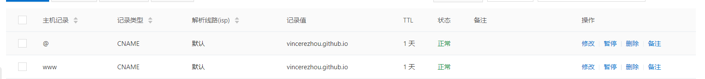
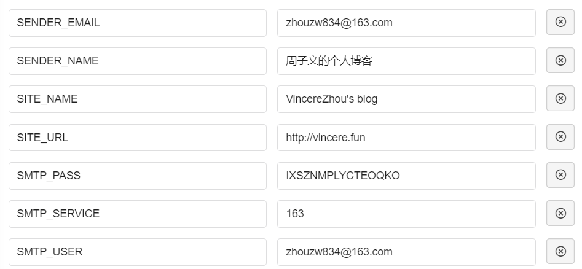
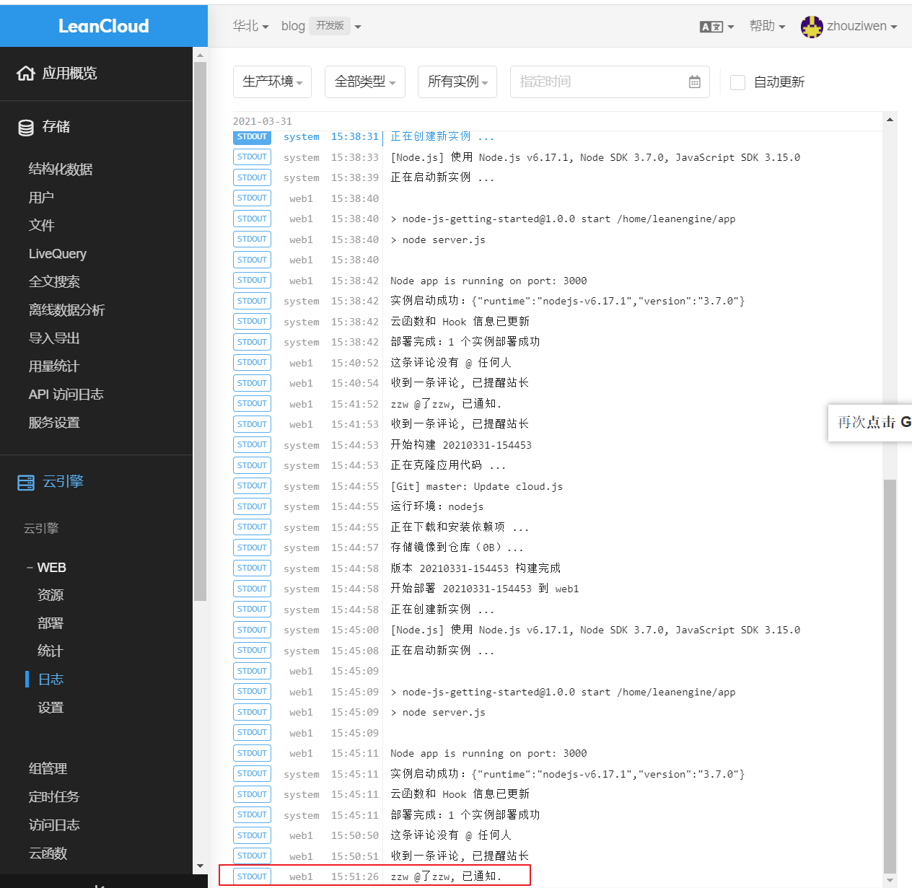
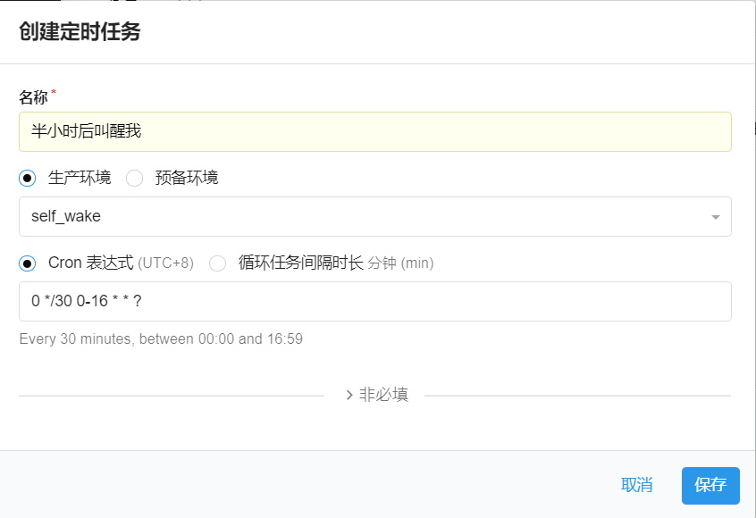
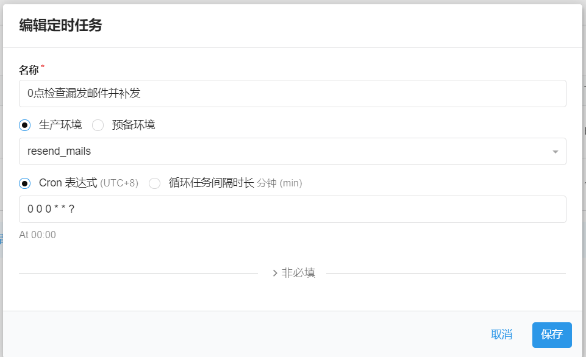
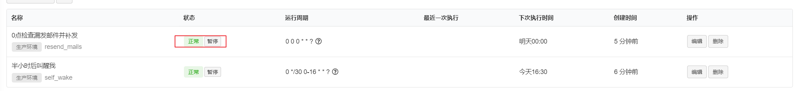
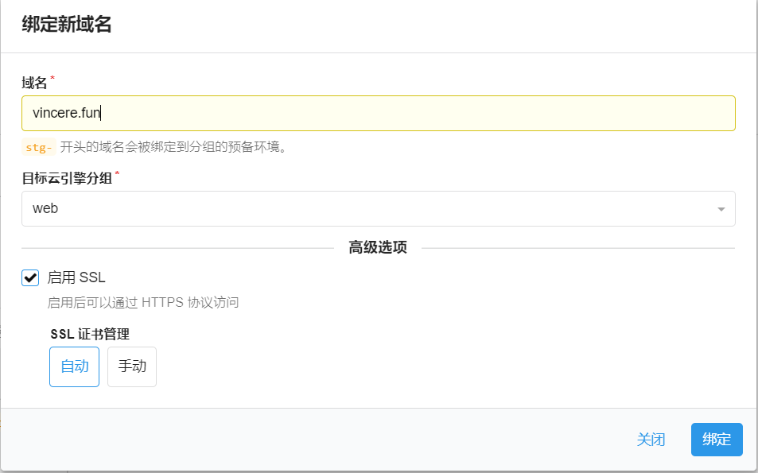

<!DOCTYPE html>


<html lang="zh-CN">


<head>
  <meta charset="utf-8" />
    
  <meta name="viewport" content="width=device-width, initial-scale=1, maximum-scale=1" />
  <title>
    搭建个人博客 |  VincereZhou&#39;s blog
  </title>
  <meta name="generator" content="hexo-theme-ayer">
  
  <link rel="shortcut icon" href="/images/mojie.jpg" />
  
  
<link rel="stylesheet" href="/dist/main.css">

  <link rel="stylesheet" href="https://cdn.jsdelivr.net/gh/Shen-Yu/cdn/css/remixicon.min.css">
  
<link rel="stylesheet" href="/css/custom.css">

  
  <script src="https://cdn.jsdelivr.net/npm/pace-js@1.0.2/pace.min.js"></script>
  
  

  

<link rel="alternate" href="/atom.xml" title="VincereZhou's blog" type="application/atom+xml">
</head>

</html>

<body>
  <div id="app">
    
      
    <main class="content on">
      <section class="outer">
  <article
  id="post-搭建个人博客"
  class="article article-type-post"
  itemscope
  itemprop="blogPost"
  data-scroll-reveal
>
  <div class="article-inner">
    
    <header class="article-header">
       
<h1 class="article-title sea-center" style="border-left:0" itemprop="name">
  搭建个人博客
</h1>
 

    </header>
     
    <div class="article-meta">
      <a href="/posts/c442673f/" class="article-date">
  <time datetime="2021-05-01T04:14:38.000Z" itemprop="datePublished">2021-05-01</time>
</a> 
  <div class="article-category">
    <a class="article-category-link" href="/categories/%E6%9D%82%E5%AD%A6%E6%97%81%E6%94%B6/">杂学旁收</a> / <a class="article-category-link" href="/categories/%E6%9D%82%E5%AD%A6%E6%97%81%E6%94%B6/hexo/">hexo</a>
  </div>
  
<div class="word_count">
    <span class="post-time">
        <span class="post-meta-item-icon">
            <i class="ri-quill-pen-line"></i>
            <span class="post-meta-item-text"> 字数统计:</span>
            <span class="post-count">9k</span>
        </span>
    </span>

    <span class="post-time">
        &nbsp; | &nbsp;
        <span class="post-meta-item-icon">
            <i class="ri-book-open-line"></i>
            <span class="post-meta-item-text"> 阅读时长≈</span>
            <span class="post-count">38 分钟</span>
        </span>
    </span>
</div>
 
    </div>
      
    <div class="tocbot"></div>


  
    <div class="article-entry" itemprop="articleBody">
       
  <link rel="stylesheet" type="text/css" href="https://cdn.jsdelivr.net/hint.css/2.4.1/hint.min.css"><p>我这个个人博客第一次建立应该是在2019年，当时网页外表比较简陋，内容也不多，之后一直也没怎么更新。最近重新搭建了一次，网页的外在部分都改了，这个就是这次我重建博客的全过程记录。</p>
<p>搭建个人博客的过程还是有意思的，虽然我对于设计网页的这些语言并不了解，往往一个问题或需求可以卡几天，但是最终解决了还是会有成就感的。</p>
<p>最后感谢我现在的女朋友，为了想在见面前把这个网页建好，作为送给她的礼物，我才有足够的动机。不然这事完成的时间可能还得靠后。</p>
<span id="more"></span>
<h1>1 搭建个人博客-基础篇</h1>
<p>B站视频：<a target="_blank" rel="noopener" href="https://www.bilibili.com/video/BV1Yb411a7ty">https://www.bilibili.com/video/BV1Yb411a7ty</a></p>
<p>hexo 官网文档：<a target="_blank" rel="noopener" href="https://hexo.io/zh-cn/docs/">https://hexo.io/zh-cn/docs/</a></p>
<p>跟着这个视频就应该没有太大的问题，很详细</p>
<h2 id="1-1-安装-node-js-和-git">1.1 安装 node.js 和 git</h2>
<p>我也不知道node.js 是啥，安装就完事了。</p>
<p>下载地址：<a target="_blank" rel="noopener" href="https://nodejs.org/zh-cn/">https://nodejs.org/zh-cn/</a></p>
<p>选择“长期支持版”，下载后一直下一步下一步就行。</p>
<p>安装后会自带一个什么 npm，这也是安装博客必须的。</p>
<p>下载git: <a target="_blank" rel="noopener" href="https://git-scm.com/">https://git-scm.com/</a></p>
<h2 id="1-2-安装hexo-windows-系统">1.2 安装hexo - windows 系统</h2>
<p>由于我是用个人电脑安装的，是windows系统，和视频不太一样，下面是我用的命令。</p>
<p><strong>管理员身份进入 cmd</strong> , 之后查看node版本和npm版本</p>
<figure class="highlight shell"><table><tr><td class="gutter"><pre><span class="line">1</span><br><span class="line">2</span><br><span class="line">3</span><br><span class="line">4</span><br></pre></td><td class="code"><pre><span class="line"><span class="meta">&gt;</span><span class="bash">node -v</span></span><br><span class="line">v14.16.0</span><br><span class="line"><span class="meta">&gt;</span><span class="bash">npm -v</span></span><br><span class="line">6.14.11</span><br></pre></td></tr></table></figure>
<p>因为npm速度很慢，利用npm安装cnpm（淘宝的版本）。</p>
<figure class="highlight plain"><table><tr><td class="gutter"><pre><span class="line">1</span><br></pre></td><td class="code"><pre><span class="line">npm install -g cnpm --registry&#x3D;https:&#x2F;&#x2F;registry.npm.taobao.org</span><br></pre></td></tr></table></figure>
<p>安装后检查</p>
<figure class="highlight plain"><table><tr><td class="gutter"><pre><span class="line">1</span><br><span class="line">2</span><br><span class="line">3</span><br><span class="line">4</span><br><span class="line">5</span><br><span class="line">6</span><br><span class="line">7</span><br><span class="line">8</span><br><span class="line">9</span><br></pre></td><td class="code"><pre><span class="line">&gt;cnpm -v</span><br><span class="line">cnpm@6.1.1 (C:\Users\zhou\AppData\Roaming\npm\node_modules\cnpm\lib\parse_argv.js)</span><br><span class="line">npm@6.14.11 (C:\Users\zhou\AppData\Roaming\npm\node_modules\cnpm\node_modules\npm\lib\npm.js)</span><br><span class="line">node@14.16.0 (C:\Program Files\nodejs\node.exe)</span><br><span class="line">npminstall@3.28.0 (C:\Users\zhou\AppData\Roaming\npm\node_modules\cnpm\node_modules\npminstall\lib\index.js)</span><br><span class="line">prefix&#x3D;C:\Users\zhou\AppData\Roaming\npm</span><br><span class="line">win32 x64 10.0.19041</span><br><span class="line">registry&#x3D;https:&#x2F;&#x2F;r.npm.taobao.org</span><br><span class="line"></span><br></pre></td></tr></table></figure>
<p>使用cnpm, 安装 hexo 框架</p>
<figure class="highlight plain"><table><tr><td class="gutter"><pre><span class="line">1</span><br></pre></td><td class="code"><pre><span class="line">cnpm install -g hexo-cli</span><br></pre></td></tr></table></figure>
<p>验证hexo是否安装完成</p>
<figure class="highlight plain"><table><tr><td class="gutter"><pre><span class="line">1</span><br><span class="line">2</span><br><span class="line">3</span><br><span class="line">4</span><br><span class="line">5</span><br><span class="line">6</span><br><span class="line">7</span><br><span class="line">8</span><br><span class="line">9</span><br><span class="line">10</span><br><span class="line">11</span><br><span class="line">12</span><br><span class="line">13</span><br><span class="line">14</span><br><span class="line">15</span><br><span class="line">16</span><br><span class="line">17</span><br><span class="line">18</span><br><span class="line">19</span><br></pre></td><td class="code"><pre><span class="line">&gt;hexo -v</span><br><span class="line">hexo-cli: 4.2.0</span><br><span class="line">os: Windows_NT 10.0.19041 win32 x64</span><br><span class="line">node: 14.16.0</span><br><span class="line">v8: 8.4.371.19-node.18</span><br><span class="line">uv: 1.40.0</span><br><span class="line">zlib: 1.2.11</span><br><span class="line">brotli: 1.0.9</span><br><span class="line">ares: 1.16.1</span><br><span class="line">modules: 83</span><br><span class="line">nghttp2: 1.41.0</span><br><span class="line">napi: 7</span><br><span class="line">llhttp: 2.1.3</span><br><span class="line">openssl: 1.1.1j</span><br><span class="line">cldr: 37.0</span><br><span class="line">icu: 67.1</span><br><span class="line">tz: 2020a</span><br><span class="line">unicode: 13.0</span><br><span class="line"></span><br></pre></td></tr></table></figure>
<h2 id="1-3-使用hexo搭建博客">1.3 使用hexo搭建博客</h2>
<p>切换目录，创建blog目录并进入</p>
<figure class="highlight plain"><table><tr><td class="gutter"><pre><span class="line">1</span><br><span class="line">2</span><br><span class="line">3</span><br><span class="line">4</span><br></pre></td><td class="code"><pre><span class="line">&gt;d:</span><br><span class="line">&gt;cd desktop</span><br><span class="line">&gt;mkdir blog</span><br><span class="line">&gt;cd blog</span><br></pre></td></tr></table></figure>
<p>初始化博客</p>
<figure class="highlight plain"><table><tr><td class="gutter"><pre><span class="line">1</span><br><span class="line">2</span><br><span class="line">3</span><br><span class="line">4</span><br><span class="line">5</span><br><span class="line">6</span><br><span class="line">7</span><br><span class="line">8</span><br><span class="line">9</span><br><span class="line">10</span><br><span class="line">11</span><br></pre></td><td class="code"><pre><span class="line">&gt;hexo init</span><br><span class="line">INFO  Cloning hexo-starter https:&#x2F;&#x2F;github.com&#x2F;hexojs&#x2F;hexo-starter.git</span><br><span class="line">INFO  Install dependencies</span><br><span class="line">added 190 packages from 159 contributors and audited 196 packages in 115.851s</span><br><span class="line"></span><br><span class="line">15 packages are looking for funding</span><br><span class="line">  run &#96;npm fund&#96; for details</span><br><span class="line"></span><br><span class="line">found 0 vulnerabilities</span><br><span class="line"></span><br><span class="line">INFO  Start blogging with Hexo!</span><br></pre></td></tr></table></figure>
<p>最后显示了，可以开始用 Hexo 写博客了。</p>
<p>启动博客，就是 hexo s（server 的缩写），平常就是在本地做预览用。</p>
<figure class="highlight plain"><table><tr><td class="gutter"><pre><span class="line">1</span><br><span class="line">2</span><br><span class="line">3</span><br><span class="line">4</span><br><span class="line">5</span><br><span class="line">6</span><br><span class="line">7</span><br><span class="line">8</span><br><span class="line">9</span><br><span class="line">10</span><br><span class="line">11</span><br><span class="line">12</span><br><span class="line">13</span><br><span class="line">14</span><br><span class="line">15</span><br><span class="line">16</span><br></pre></td><td class="code"><pre><span class="line">&gt;hexo s</span><br><span class="line">INFO  Validating config</span><br><span class="line">INFO  Start processing</span><br><span class="line">Deprecated as of 10.7.0. highlight(lang, code, ...args) has been deprecated.</span><br><span class="line">Deprecated as of 10.7.0. Please use highlight(code, options) instead.</span><br><span class="line">https:&#x2F;&#x2F;github.com&#x2F;highlightjs&#x2F;highlight.js&#x2F;issues&#x2F;2277</span><br><span class="line">Deprecated as of 10.7.0. highlight(lang, code, ...args) has been deprecated.</span><br><span class="line">Deprecated as of 10.7.0. Please use highlight(code, options) instead.</span><br><span class="line">https:&#x2F;&#x2F;github.com&#x2F;highlightjs&#x2F;highlight.js&#x2F;issues&#x2F;2277</span><br><span class="line">Deprecated as of 10.7.0. highlight(lang, code, ...args) has been deprecated.</span><br><span class="line">Deprecated as of 10.7.0. Please use highlight(code, options) instead.</span><br><span class="line">https:&#x2F;&#x2F;github.com&#x2F;highlightjs&#x2F;highlight.js&#x2F;issues&#x2F;2277</span><br><span class="line">Deprecated as of 10.7.0. highlight(lang, code, ...args) has been deprecated.</span><br><span class="line">Deprecated as of 10.7.0. Please use highlight(code, options) instead.</span><br><span class="line">https:&#x2F;&#x2F;github.com&#x2F;highlightjs&#x2F;highlight.js&#x2F;issues&#x2F;2277</span><br><span class="line">INFO  Hexo is running at http:&#x2F;&#x2F;localhost:4000 . Press Ctrl+C to stop.</span><br></pre></td></tr></table></figure>
<p>就会在本地的4000端口启动。</p>
<p>在浏览器输入 <code>http://localhost:4000/</code> 看看。</p>
<p>然后可以输入 ctrl + c 断开。</p>
<h2 id="1-4-新建博客">1.4 新建博客</h2>
<p>使用 hexo new (简写为n) 命令。</p>
<figure class="highlight plain"><table><tr><td class="gutter"><pre><span class="line">1</span><br></pre></td><td class="code"><pre><span class="line">hexo new &quot;title&quot;</span><br></pre></td></tr></table></figure>
<p>然后在 source/_posts 目录下就有了新建的md文件</p>
<p>在cmd中，当前目录为blog目录下。先清理一下</p>
<figure class="highlight plain"><table><tr><td class="gutter"><pre><span class="line">1</span><br></pre></td><td class="code"><pre><span class="line">hexo clean</span><br></pre></td></tr></table></figure>
<p>这个命令hexo官网的说法如下：</p>
<blockquote>
<p>清除缓存文件 (<code>db.json</code>) 和已生成的静态文件 (<code>public</code>)。</p>
<p>在某些情况（尤其是更换主题后），如果发现您对站点的更改无论如何也不生效，您可能需要运行该命令。</p>
</blockquote>
<p>貌似这个清理的命令可以不用每次都输入，只是在输入命令后网页没有改变，才需要清理。从网上看，确实如此。</p>
<blockquote>
<p>#清除缓存，若是网页正常情况下可以忽略这条命令</p>
</blockquote>
<p>然后，生成静态文件</p>
<figure class="highlight plain"><table><tr><td class="gutter"><pre><span class="line">1</span><br><span class="line">2</span><br></pre></td><td class="code"><pre><span class="line">hexo generate</span><br><span class="line">hexo g</span><br></pre></td></tr></table></figure>
<p>然后再启动一下，看看</p>
<figure class="highlight plain"><table><tr><td class="gutter"><pre><span class="line">1</span><br></pre></td><td class="code"><pre><span class="line">hexo server</span><br></pre></td></tr></table></figure>
<h2 id="1-5-hexo-官方配置">1.5 hexo 官方配置</h2>
<p>这里的配置指的是根目录下的 <strong>_config.yml</strong> 文件的设置</p>
<p>直接看官网资料即可，官网还有小视频。</p>
<p><a target="_blank" rel="noopener" href="https://hexo.io/docs">https://hexo.io/docs</a></p>
<h3 id="网站-site">网站 (site)</h3>
<figure class="highlight yaml"><table><tr><td class="gutter"><pre><span class="line">1</span><br><span class="line">2</span><br><span class="line">3</span><br><span class="line">4</span><br><span class="line">5</span><br><span class="line">6</span><br><span class="line">7</span><br></pre></td><td class="code"><pre><span class="line"><span class="attr">title:</span> <span class="string">VincereZhou&#x27;s</span> <span class="string">blog</span></span><br><span class="line"><span class="attr">subtitle:</span></span><br><span class="line"><span class="attr">description:</span></span><br><span class="line"><span class="attr">keywords:</span></span><br><span class="line"><span class="attr">author:</span> <span class="string">Vincere</span> <span class="string">Zhou</span></span><br><span class="line"><span class="attr">language:</span> <span class="string">zh-CN</span></span><br><span class="line"><span class="attr">timezone:</span> <span class="string">Asia/Shanghai</span></span><br></pre></td></tr></table></figure>
<p>其中</p>
<ul>
<li><strong>title</strong> : 标题</li>
<li><strong>language</strong> :  网站使用的语言。简体中文常见的有 <code>zh-Hans</code>和 <code>zh-CN</code>。（我也搞不清楚这两个区别）</li>
<li><strong>timezone</strong> :  网站时区。中国大陆地区使用 <code>Asia/Shanghai</code>。</li>
</ul>
<p>其他的都不需要。</p>
<h3 id="网址-URL">网址 (URL)</h3>
<p><strong>全部不需要设置</strong>。</p>
<p>其中有一个 <code>permalink</code> ，用来设置文章的<strong>永久链接</strong>格式。每篇文章的网址默认是 <strong>年/月/日/文章名称</strong>。这个也不用改了，如果改了可能会出问题。</p>
<p>下面是我之前的一篇博客的默认网址，后面的乱码其实是文章名称，由于含有中文复制下来就成这样了。</p>
<figure class="highlight plain"><table><tr><td class="gutter"><pre><span class="line">1</span><br></pre></td><td class="code"><pre><span class="line">http:&#x2F;&#x2F;vincere.fun&#x2F;2020&#x2F;01&#x2F;10&#x2F;%E5%8F%8D%E7%BB%8F-%E7%AC%AC%E5%85%AB%E5%8D%B7%E6%9D%82%E8%AF%B4-%E9%92%93%E6%83%85&#x2F;</span><br></pre></td></tr></table></figure>
<h3 id="目录-Directory">目录 (Directory)</h3>
<p>全部不需要设置。</p>
<h3 id="文章-Writing">文章 (Writing)</h3>
<h4 id="本地图片插入">本地图片插入</h4>
<figure class="highlight yaml"><table><tr><td class="gutter"><pre><span class="line">1</span><br></pre></td><td class="code"><pre><span class="line"><span class="attr">post_asset_folder:</span> <span class="literal">true</span></span><br></pre></td></tr></table></figure>
<p>使用相对路径插入图片。</p>
<p>Hexo将会在你每一次通过 <code>hexo new [layout] &lt;title&gt;</code> 命令创建新文章时自动创建一个文件夹。这个资源文件夹将会有与这个文章文件一样的名字。将所有与你的文章有关的资源放在这个关联文件夹中之后，你可以通过相对路径来引用它们。</p>
<p>例如：</p>
<figure class="highlight plain"><table><tr><td class="gutter"><pre><span class="line">1</span><br></pre></td><td class="code"><pre><span class="line"></span><br></pre></td></tr></table></figure>
<p>上述是markdown的引用方式，图片只能在文章中显示，但无法在首页中正常显示。</p>
<p>如果希望图片在文章和首页中同时显示，可以使用标签插件语法。</p>
<figure class="highlight plain"><table><tr><td class="gutter"><pre><span class="line">1</span><br></pre></td><td class="code"><pre><span class="line">&#123;% asset_img image.jpg This is an image %&#125;</span><br></pre></td></tr></table></figure>
<p>我就是不太清楚，例子里的<code>This is an image</code> 是啥，图片标题？</p>
<p>但是我不用在首页显示图片，所以我用不到这种写法。</p>
<h3 id="分类-标签-Category-Tag">分类 &amp; 标签 (Category &amp; Tag)</h3>
<p>全部不需要设置。</p>
<h3 id="日期-时间格式-Date-Time-format">日期 / 时间格式 (Date / Time format)</h3>
<p>全部不需要设置。</p>
<h3 id="分页-Pagination">分页 (Pagination)</h3>
<figure class="highlight yaml"><table><tr><td class="gutter"><pre><span class="line">1</span><br></pre></td><td class="code"><pre><span class="line"><span class="attr">per_page:</span> <span class="number">10</span></span><br></pre></td></tr></table></figure>
<p>每页显示的文章量 (0 = 关闭分页功能)</p>
<h3 id="扩展-Extensions">扩展 (Extensions)</h3>
<figure class="highlight yaml"><table><tr><td class="gutter"><pre><span class="line">1</span><br></pre></td><td class="code"><pre><span class="line"><span class="attr">theme:</span> <span class="string">ayer</span></span><br></pre></td></tr></table></figure>
<p>当前主题名称。</p>
<h3 id="部署-Deployment">部署 (Deployment)</h3>
<figure class="highlight yaml"><table><tr><td class="gutter"><pre><span class="line">1</span><br><span class="line">2</span><br><span class="line">3</span><br><span class="line">4</span><br><span class="line">5</span><br><span class="line">6</span><br></pre></td><td class="code"><pre><span class="line"><span class="attr">deploy:</span></span><br><span class="line">  <span class="attr">type:</span> <span class="string">git</span></span><br><span class="line">  <span class="comment"># repo: https://github.com/VincereZhou/VincereZhou.github.io.git</span></span><br><span class="line">  <span class="attr">repo:</span> <span class="string">git@github.com:VincereZhou/VincereZhou.github.io.git</span></span><br><span class="line">  <span class="attr">branch:</span> <span class="string">master</span></span><br><span class="line"></span><br></pre></td></tr></table></figure>
<p>表示连接上 Github</p>
<h2 id="1-6-hexo命令总结">1.6 hexo命令总结</h2>
<h4 id="常用命令">常用命令</h4>
<figure class="highlight yaml"><table><tr><td class="gutter"><pre><span class="line">1</span><br><span class="line">2</span><br><span class="line">3</span><br><span class="line">4</span><br><span class="line">5</span><br><span class="line">6</span><br></pre></td><td class="code"><pre><span class="line"><span class="string">hexo</span> <span class="string">new</span> <span class="string">&quot;title&quot;</span> <span class="comment"># 生成新文章</span></span><br><span class="line"><span class="string">hexo</span> <span class="string">generate</span>    <span class="comment"># 生成静态文件          </span></span><br><span class="line"><span class="string">hexo</span> <span class="string">generate</span> <span class="string">-d</span> <span class="comment"># 生成静态文件，同时推到远端</span></span><br><span class="line"><span class="string">hexo</span> <span class="string">server</span>      <span class="comment"># 本地查看</span></span><br><span class="line"><span class="string">hexo</span> <span class="string">deploy</span>      <span class="comment"># 推到远端</span></span><br><span class="line"><span class="string">hexo</span> <span class="string">clean</span>       <span class="comment"># 清楚缓存文件</span></span><br></pre></td></tr></table></figure>
<h4 id="选项">选项</h4>
<p>选项的意思是所有的命令都能携带。</p>
<p>可能用到的选项有两个：</p>
<figure class="highlight yaml"><table><tr><td class="gutter"><pre><span class="line">1</span><br></pre></td><td class="code"><pre><span class="line"><span class="string">hexo</span> <span class="string">--safe</span></span><br></pre></td></tr></table></figure>
<p>在<strong>安全模式</strong>下，不会载入插件和脚本。当您在安装新插件遭遇问题时，可以尝试以安全模式重新执行。</p>
<figure class="highlight yaml"><table><tr><td class="gutter"><pre><span class="line">1</span><br></pre></td><td class="code"><pre><span class="line"><span class="string">hexo</span> <span class="string">--silent</span></span><br></pre></td></tr></table></figure>
<p>简洁模式，隐藏终端信息。</p>
<p>这个简洁模式什么都不会打印出来，但是我担心报错会不会正常显示。</p>
<h2 id="1-7-小技巧">1.7 小技巧</h2>
<h3 id="文章截断">文章截断</h3>
<p>文章截断指在主页那不显示全部的文章内容（因为内容太长了），只显示文章开头的一部分（就类似于只显示摘要）。这样如果读者可以方便地翻阅所有的文章，遇到有兴趣的就点进去看。</p>
<p><a target="_blank" rel="noopener" href="https://hopefulnick.github.io/2018/04/01/180401Hexo%E6%96%87%E7%AB%A0%E6%88%AA%E6%96%AD/">https://hopefulnick.github.io/2018/04/01/180401Hexo文章截断/</a></p>
<p>推荐使用在文章中使用<code>&lt;!-- more --&gt;</code>手动进行截断</p>
<h1>2 部署到github</h1>
<p>如果不部署到github，那么你只能在本地上看到你的博客，那么别人就没法看到了。</p>
<p>在你的 <a target="_blank" rel="noopener" href="https://github.com/">github</a> 主页上（没有账户就创建一个），创建一个新的 repository，名字必须为自己的用户名+<code>.github.io</code>。以后你博客的所有内容均会放在这个仓库里</p>
<p>回到 cmd 命令行，要装一个 git 部署的插件，windows 命令如下</p>
<figure class="highlight plain"><table><tr><td class="gutter"><pre><span class="line">1</span><br></pre></td><td class="code"><pre><span class="line">cnpm install hexo-deployer-git --save</span><br></pre></td></tr></table></figure>
<p>设置 _config.yml 文件，修改最后的 Deployment 部分，我之前做过了，内容如下：</p>
<figure class="highlight plain"><table><tr><td class="gutter"><pre><span class="line">1</span><br><span class="line">2</span><br><span class="line">3</span><br><span class="line">4</span><br><span class="line">5</span><br><span class="line">6</span><br></pre></td><td class="code"><pre><span class="line"># Deployment</span><br><span class="line">## Docs: https:&#x2F;&#x2F;hexo.io&#x2F;docs&#x2F;deployment.html</span><br><span class="line">deploy:</span><br><span class="line">  type: git</span><br><span class="line">  repo: https:&#x2F;&#x2F;github.com&#x2F;VincereZhou&#x2F;VincereZhou.github.io.git</span><br><span class="line">  branch: master</span><br></pre></td></tr></table></figure>
<p>部署到远端</p>
<figure class="highlight plain"><table><tr><td class="gutter"><pre><span class="line">1</span><br><span class="line">2</span><br></pre></td><td class="code"><pre><span class="line">hexo deploy</span><br><span class="line">hexo d</span><br></pre></td></tr></table></figure>
<h2 id="2-0-绑定自己的域名">2.0 绑定自己的域名</h2>
<p>参考网址：<a target="_blank" rel="noopener" href="https://oliverqueen.cn/2018/01/25/%E5%8F%AF%E8%83%BD%E6%98%AF%E6%9C%80%E5%85%A8%E7%9A%84%E4%BD%BF%E7%94%A8HEXO%E6%90%AD%E5%BB%BA%E4%B8%AA%E4%BA%BA%E5%8D%9A%E5%AE%A2%E6%95%99%E7%A8%8B/">https://oliverqueen.cn/2018/01/25/%E5%8F%AF%E8%83%BD%E6%98%AF%E6%9C%80%E5%85%A8%E7%9A%84%E4%BD%BF%E7%94%A8HEXO%E6%90%AD%E5%BB%BA%E4%B8%AA%E4%BA%BA%E5%8D%9A%E5%AE%A2%E6%95%99%E7%A8%8B/</a></p>
<h3 id="域名解析">域名解析</h3>
<p>我的域名是在阿里云买的，在阿里云-域名控制台，找到自己的域名，新建两个CNAME记录（不要新建A记录了，github的ip地址可能会变，导致github一直给我发邮件说域名失效）</p>
<p>两个记录一条主机记录为@，一条主机记录为www，这样别人访问的时候无论加不加 www. 都能访问到。</p>
<p></p>
<h3 id="本地操作">本地操作</h3>
<p>在你的本地hexo博客文件的source文件夹下创建一个CNAME文件，记住不要有文件后缀名。编辑CNAME文件，里面写你在第一步申请的域名，例如<a href="https://link.zhihu.com/?target=http%3A//xxxx.cn">http://xxxx.cn</a>，记住不要有www。</p>
<h3 id="github-仓库配置-https协议">github 仓库配置 - https协议</h3>
<p>找到github 仓库，设置的 pages - custom domain ，填上你的个人域名（不加www.）</p>
<p>在pages 里可以勾选<strong>Enforce HTTPS（实施 HTTPS）</strong> ，这样以后就会用 https协议， 谷歌浏览器打开你的网页就不会显示不安全了。如果无法勾选，旁边显示 <em>Unavailable for your site because your domain is not properly configured to support HTTPS</em>, 那就将填在<strong>Custom domain</strong>里的自定义域名清空，保存，然后重新填上自定义域名，再保存。</p>
<p>勾选<strong>Enforce HTTPS</strong>选项以后，别人说这时会提示正在签发证书: <em>Not yet available for your site because the certificate has not finished being issued</em>。（但是我没有显示这些文字）</p>
<p>证书签发成功后，可以使用 https 链接访问自定义域名了。</p>
<p>勾选完，等一段时间才会生效，重新推到远端，之后打开网址就都是 https 了。</p>
<h3 id="生成公钥，并复制到github">生成公钥，并复制到github</h3>
<p>按照下面这个网址进行操作</p>
<p><a target="_blank" rel="noopener" href="https://zhuanlan.zhihu.com/p/26625249">https://zhuanlan.zhihu.com/p/26625249</a></p>
<p>检查有没有公钥。先打开 git bash , 然后输入命令。</p>
<figure class="highlight shell"><table><tr><td class="gutter"><pre><span class="line">1</span><br></pre></td><td class="code"><pre><span class="line">cat ~/.ssh/id_rsa.pub</span><br></pre></td></tr></table></figure>
<p>如果提示文件不存在，说明没有生成公钥。生成公钥如下，输入命令后，<strong>连着按三下Enter</strong>即可。</p>
<figure class="highlight shell"><table><tr><td class="gutter"><pre><span class="line">1</span><br><span class="line">2</span><br><span class="line">3</span><br><span class="line">4</span><br><span class="line">5</span><br></pre></td><td class="code"><pre><span class="line"><span class="meta">$</span><span class="bash"> ssh-keygen -t rsa -C <span class="string">&quot;zhuanzhugongxian@sina.com&quot;</span></span></span><br><span class="line">Generating public/private rsa key pair.</span><br><span class="line">Enter file in which to save the key (/c/Users/zhou/.ssh/id_rsa): q</span><br><span class="line">Enter passphrase (empty for no passphrase):</span><br><span class="line">Enter same passphrase again:</span><br></pre></td></tr></table></figure>
<p>然后复制公钥的全部内容，黏贴到 github 的 ”新建new SSH Key“ 中。</p>
<figure class="highlight shell"><table><tr><td class="gutter"><pre><span class="line">1</span><br></pre></td><td class="code"><pre><span class="line">cat ~/.ssh/id_rsa.pub</span><br></pre></td></tr></table></figure>
<p>然后再检查一下，公钥是否设置成功。</p>
<figure class="highlight shell"><table><tr><td class="gutter"><pre><span class="line">1</span><br><span class="line">2</span><br><span class="line">3</span><br></pre></td><td class="code"><pre><span class="line"><span class="meta">$</span><span class="bash"> ssh -T git@github.com</span></span><br><span class="line">Hi VincereZhou! You&#x27;ve successfully authenticated, but GitHub does not provide shell access.</span><br><span class="line"></span><br></pre></td></tr></table></figure>
<p>生成这条语句，就说明连接成功。</p>
<p>这一步操作的好处是，<strong>每次更新博客，不用输入昵称和邮箱进行确认了</strong>，一劳永逸。</p>
<h2 id="2-1-推到远端各种报错说明">2.1 推到远端各种报错说明</h2>
<h4 id="推到远端，报错who-you-are">推到远端，报错who you are</h4>
<p>运行下面两条命令，引号内容改成自己的邮箱和昵称</p>
<figure class="highlight plain"><table><tr><td class="gutter"><pre><span class="line">1</span><br><span class="line">2</span><br></pre></td><td class="code"><pre><span class="line">git config --global user.email &quot;zhuanzhugongxian@sina.com&quot;</span><br><span class="line">git config --global user.name &quot;VincereZhou&quot;</span><br></pre></td></tr></table></figure>
<h4 id="推到远端，报错-OpenSSL-SSL-read">推到远端，报错 OpenSSL SSL_read</h4>
<p>报错信息如下：</p>
<figure class="highlight plain"><table><tr><td class="gutter"><pre><span class="line">1</span><br><span class="line">2</span><br><span class="line">3</span><br><span class="line">4</span><br><span class="line">5</span><br><span class="line">6</span><br><span class="line">7</span><br><span class="line">8</span><br><span class="line">9</span><br><span class="line">10</span><br><span class="line">11</span><br></pre></td><td class="code"><pre><span class="line">fatal: unable to access &#39;https:&#x2F;&#x2F;github.com&#x2F;VincereZhou&#x2F;VincereZhou.github.io.git&#x2F;&#39;: OpenSSL SSL_read: Connection was reset, errno 10054</span><br><span class="line">FATAL &#123;</span><br><span class="line">  err: Error: Spawn failed</span><br><span class="line">      at ChildProcess.&lt;anonymous&gt; (D:\Desktop\blog\node_modules\_hexo-util@2.4.0@hexo-util\lib\spawn.js:51:21)</span><br><span class="line">      at ChildProcess.emit (events.js:315:20)</span><br><span class="line">      at ChildProcess.cp.emit (D:\Desktop\blog\node_modules\_cross-spawn@7.0.3@cross-spawn\lib\enoent.js:34:29)</span><br><span class="line">      at Process.ChildProcess._handle.onexit (internal&#x2F;child_process.js:277:12) &#123;</span><br><span class="line">    code: 128</span><br><span class="line">  &#125;</span><br><span class="line">&#125; Something&#39;s wrong. Maybe you can find the solution here: %s https:&#x2F;&#x2F;hexo.io&#x2F;docs&#x2F;troubleshooting.html</span><br><span class="line"></span><br></pre></td></tr></table></figure>
<p>这个报错貌似很常见，可以重新 <code>hexo d</code> 或过段时间 <code>hexo d</code> 看看，说不定就又好了。</p>
<p>如果还不行，这个网址 <a target="_blank" rel="noopener" href="https://github.com/hexojs/hexo/issues/2778">https://github.com/hexojs/hexo/issues/2778</a> 有一个解决办法</p>
<p>根据这个网址的说法，就是把 _config.yml 中的 repo 内容修改一下</p>
<figure class="highlight shell"><table><tr><td class="gutter"><pre><span class="line">1</span><br><span class="line">2</span><br></pre></td><td class="code"><pre><span class="line"><span class="meta">#</span><span class="bash"> repo: https://github.com/VincereZhou/VincereZhou.github.io.git</span></span><br><span class="line">repo: git@github.com:VincereZhou/VincereZhou.github.io.git</span><br></pre></td></tr></table></figure>
<p>然后重新推送一下，就一切正常了。</p>
<h4 id="推断远端，报错没有git">推断远端，报错没有git</h4>
<p>报错信息为：</p>
<figure class="highlight plain"><table><tr><td class="gutter"><pre><span class="line">1</span><br></pre></td><td class="code"><pre><span class="line">ERROR Deployer not found: git</span><br></pre></td></tr></table></figure>
<p>网上说，是没安装 hexo-deployer-git 插件</p>
<p><a target="_blank" rel="noopener" href="https://blog.csdn.net/Java_Mike/article/details/96456318">https://blog.csdn.net/Java_Mike/article/details/96456318</a></p>
<p>可我明明安装了的，那就再装一次试试</p>
<figure class="highlight plain"><table><tr><td class="gutter"><pre><span class="line">1</span><br></pre></td><td class="code"><pre><span class="line">cnpm install hexo-deployer-git --save</span><br></pre></td></tr></table></figure>
<p>好吧，可以了。我在想，这是不是因为之前安装用的是 cmd ，这次用的是 git bash 的原因。从目前来看完全可以全部用 git bash，更方便。</p>
<h4 id="推到远端，报错-Timed-out">推到远端，报错 Timed out</h4>
<p>报错如下：</p>
<figure class="highlight plain"><table><tr><td class="gutter"><pre><span class="line">1</span><br><span class="line">2</span><br><span class="line">3</span><br><span class="line">4</span><br><span class="line">5</span><br><span class="line">6</span><br><span class="line">7</span><br><span class="line">8</span><br><span class="line">9</span><br><span class="line">10</span><br></pre></td><td class="code"><pre><span class="line">fatal: unable to access &#39;https:&#x2F;&#x2F;github.com&#x2F;VincereZhou&#x2F;VincereZhou.github.io.git&#x2F;&#39;: Failed to connect to github.com port 443: Timed out</span><br><span class="line">FATAL &#123;</span><br><span class="line">  err: Error: Spawn failed</span><br><span class="line">      at ChildProcess.&lt;anonymous&gt; (D:\Desktop\blog\node_modules\_hexo-util@2.4.0@hexo-util\lib\spawn.js:51:21)</span><br><span class="line">      at ChildProcess.emit (events.js:315:20)</span><br><span class="line">      at ChildProcess.cp.emit (D:\Desktop\blog\node_modules\_cross-spawn@7.0.3@cross-spawn\lib\enoent.js:34:29)</span><br><span class="line">      at Process.ChildProcess._handle.onexit (internal&#x2F;child_process.js:277:12) &#123;</span><br><span class="line">    code: 128</span><br><span class="line">  &#125;</span><br><span class="line">&#125; Something&#39;s wrong. Maybe you can find the solution here: %s https:&#x2F;&#x2F;hexo.io&#x2F;docs&#x2F;troubleshooting.html</span><br></pre></td></tr></table></figure>
<p>这个我的经验是不用管它，重新 <code>hexo d</code> 或过段时间 <code>hexo d</code>就好了。</p>
<h1>3 博客迁移</h1>
<p>当你要把个人博客的文件从一台电脑转移到另一台电脑。我看知乎上说，直接替换文件夹就行了，我之前好像也这么干过。实际情况也说明确实可以，但是我上面的流程都得走完</p>
<p><a target="_blank" rel="noopener" href="https://www.zhihu.com/question/21193762">https://www.zhihu.com/question/21193762</a></p>
<blockquote>
<p>不知道楼主说的是不是换了一台新电脑需要重新部署hexo，如果是的话请往下看。<br>
我从windows换到mac上来，用了上面的一些方法都不成功，其实并没有这么复杂。<br>
首先按照网上搭建hexo的过程一步步重新在新电脑上操作，<br>
之后只要用原电脑的scaffolds, source, themes 和 _config.yml替换新生成的文件就行了。<br>
十分简单～<br>
作者：王璐婷链接：<a target="_blank" rel="noopener" href="https://www.zhihu.com/question/21193762/answer/105977542%E6%9D%A5%E6%BA%90%EF%BC%9A%E7%9F%A5%E4%B9%8E%E8%91%97%E4%BD%9C%E6%9D%83%E5%BD%92%E4%BD%9C%E8%80%85%E6%89%80%E6%9C%89%E3%80%82%E5%95%86%E4%B8%9A%E8%BD%AC%E8%BD%BD%E8%AF%B7%E8%81%94%E7%B3%BB%E4%BD%9C%E8%80%85%E8%8E%B7%E5%BE%97%E6%8E%88%E6%9D%83%EF%BC%8C%E9%9D%9E%E5%95%86%E4%B8%9A%E8%BD%AC%E8%BD%BD%E8%AF%B7%E6%B3%A8%E6%98%8E%E5%87%BA%E5%A4%84%E3%80%82">https://www.zhihu.com/question/21193762/answer/105977542来源：知乎著作权归作者所有。商业转载请联系作者获得授权，非商业转载请注明出处。</a></p>
</blockquote>
<h1>4 主题设置 - 进阶</h1>
<p>hexo 默认的网页比较丑，你可以通过更换主题啥的来更改皮肤。</p>
<p>我这次用的 ayer 主题，但是不是用的这个主题的默认的样子，自己也基于这个主题改了很多东西。</p>
<h2 id="4-1-ayer-主题">4.1 ayer 主题</h2>
<p>看作者自己的中文说明</p>
<p><a target="_blank" rel="noopener" href="https://shen-yu.gitee.io/2019/ayer/">https://shen-yu.gitee.io/2019/ayer/</a></p>
<p>下载那些就不说了。</p>
<h3 id="4-1-1-安装主题">4.1.1 安装主题</h3>
<p>作者给了了两种方法</p>
<p><strong>方法一：</strong></p>
<figure class="highlight plain"><table><tr><td class="gutter"><pre><span class="line">1</span><br><span class="line">2</span><br></pre></td><td class="code"><pre><span class="line"># 国内用户如果速度较慢，可以把github地址替换为：https:&#x2F;&#x2F;gitee.com&#x2F;mirrors&#x2F;ayer.git</span><br><span class="line">git clone https:&#x2F;&#x2F;github.com&#x2F;Shen-Yu&#x2F;hexo-theme-ayer.git themes&#x2F;ayer</span><br></pre></td></tr></table></figure>
<p><strong>方法二（hexo &gt;= 5.0）：</strong></p>
<figure class="highlight plain"><table><tr><td class="gutter"><pre><span class="line">1</span><br></pre></td><td class="code"><pre><span class="line">cnpm i hexo-theme-ayer -S</span><br></pre></td></tr></table></figure>
<ul>
<li>如果是新安装本主题，安装完成后会在根目录生成一个<code>_config.ayer.yml</code>文件，直接编辑<code>_config.ayer.yml</code>文件进行配置即可。</li>
<li>如果是主题升级，可以使用方法一，也可以将原来的配置文件移动到根目录，并重命名为<code>_config.ayer.yml</code>。</li>
</ul>
<p><strong>我选了方法一</strong>。因为方法二就是在根目录下生成了 <code>_config.ayer.yml</code> 文件，没有生成 <code>/theme/ayer</code> 文件夹 ，不便于我之后修改。</p>
<p>使用方法一，之后可以直接修改 <code>/theme/ayer</code> 文件夹中的配置文件。</p>
<h3 id="4-1-2-安装必须插件">4.1.2 安装必须插件</h3>
<p>第一个插件，用于搜索</p>
<figure class="highlight plain"><table><tr><td class="gutter"><pre><span class="line">1</span><br></pre></td><td class="code"><pre><span class="line">npm install hexo-generator-searchdb --save</span><br></pre></td></tr></table></figure>
<p>然后将下面的内容复制到 根目录下的  <code>_config.yml</code> 里</p>
<figure class="highlight plain"><table><tr><td class="gutter"><pre><span class="line">1</span><br><span class="line">2</span><br><span class="line">3</span><br><span class="line">4</span><br><span class="line">5</span><br></pre></td><td class="code"><pre><span class="line"># hexo-generator-searchdb</span><br><span class="line">search:</span><br><span class="line">  path: search.xml</span><br><span class="line">  field: post</span><br><span class="line">  format: html</span><br></pre></td></tr></table></figure>
<p>另一个插件，用于生成RSS订阅</p>
<figure class="highlight plain"><table><tr><td class="gutter"><pre><span class="line">1</span><br></pre></td><td class="code"><pre><span class="line">npm install hexo-generator-feed --save</span><br></pre></td></tr></table></figure>
<p>然后将下面的内容复制到 根目录下的  <code>_config.yml</code> 里</p>
<figure class="highlight plain"><table><tr><td class="gutter"><pre><span class="line">1</span><br><span class="line">2</span><br><span class="line">3</span><br><span class="line">4</span><br><span class="line">5</span><br><span class="line">6</span><br><span class="line">7</span><br><span class="line">8</span><br><span class="line">9</span><br><span class="line">10</span><br></pre></td><td class="code"><pre><span class="line">feed:</span><br><span class="line">    type: atom</span><br><span class="line">    path: atom.xml</span><br><span class="line">    limit: 20</span><br><span class="line">    hub:</span><br><span class="line">    content:</span><br><span class="line">    content_limit: 140</span><br><span class="line">    content_limit_delim: &#39; &#39;</span><br><span class="line">    order_by: -date	</span><br><span class="line"></span><br></pre></td></tr></table></figure>
<h3 id="4-1-3-“分类”页面">4.1.3 “分类”页面</h3>
<p>运行命令</p>
<figure class="highlight plain"><table><tr><td class="gutter"><pre><span class="line">1</span><br></pre></td><td class="code"><pre><span class="line">hexo new page categories</span><br></pre></td></tr></table></figure>
<p>然后将以下复制到 /source/categories/index.md 文件</p>
<figure class="highlight plain"><table><tr><td class="gutter"><pre><span class="line">1</span><br><span class="line">2</span><br><span class="line">3</span><br><span class="line">4</span><br><span class="line">5</span><br></pre></td><td class="code"><pre><span class="line">---</span><br><span class="line">title: categories</span><br><span class="line">type: &quot;categories&quot;</span><br><span class="line">layout: &quot;categories&quot;</span><br><span class="line">---</span><br></pre></td></tr></table></figure>
<h3 id="4-1-4-“标签”页面">4.1.4 “标签”页面</h3>
<figure class="highlight plain"><table><tr><td class="gutter"><pre><span class="line">1</span><br></pre></td><td class="code"><pre><span class="line">hexo new page tags</span><br></pre></td></tr></table></figure>
<p>同样配置相应的 <a target="_blank" rel="noopener" href="http://index.md">index.md</a> 文件</p>
<figure class="highlight plain"><table><tr><td class="gutter"><pre><span class="line">1</span><br><span class="line">2</span><br><span class="line">3</span><br><span class="line">4</span><br><span class="line">5</span><br></pre></td><td class="code"><pre><span class="line">---</span><br><span class="line">title: tags</span><br><span class="line">type: &quot;tags&quot;</span><br><span class="line">layout: &quot;tags&quot;</span><br><span class="line">---</span><br></pre></td></tr></table></figure>
<h3 id="4-1-5-友情链接">4.1.5 友情链接</h3>
<figure class="highlight plain"><table><tr><td class="gutter"><pre><span class="line">1</span><br></pre></td><td class="code"><pre><span class="line">hexo new page friends</span><br></pre></td></tr></table></figure>
<p>然后将以下复制到 /source/friends/index.md 文件</p>
<figure class="highlight plain"><table><tr><td class="gutter"><pre><span class="line">1</span><br><span class="line">2</span><br><span class="line">3</span><br><span class="line">4</span><br><span class="line">5</span><br></pre></td><td class="code"><pre><span class="line">---</span><br><span class="line">title: friends</span><br><span class="line">type: friends</span><br><span class="line">layout: &quot;friends&quot;</span><br><span class="line">---</span><br></pre></td></tr></table></figure>
<p>然后在 ayer 主题目录下的 <code>_config.yml</code> 中（我用第二种方法，修改根目录下的<code>_config.ayer.yml</code>）自定义 <code>friends_link</code> 配置项即可</p>
<h3 id="4-1-6-相册">4.1.6 相册</h3>
<p>这个我感觉根据个人需求吧，我不热爱摄影，所以我没有用这个。</p>
<figure class="highlight plain"><table><tr><td class="gutter"><pre><span class="line">1</span><br></pre></td><td class="code"><pre><span class="line">hexo new page photos</span><br></pre></td></tr></table></figure>
<p>然后将以下复制到 /source/photos/index.md 文件，<code>img_url</code> 替换成图片路径，<code>caption</code> 替换成图片名称</p>
<figure class="highlight plain"><table><tr><td class="gutter"><pre><span class="line">1</span><br><span class="line">2</span><br><span class="line">3</span><br><span class="line">4</span><br><span class="line">5</span><br><span class="line">6</span><br><span class="line">7</span><br><span class="line">8</span><br></pre></td><td class="code"><pre><span class="line">---</span><br><span class="line">title: Gallery</span><br><span class="line"></span><br><span class="line">albums: [</span><br><span class="line">        [&quot;img_url&quot;,&quot;img_caption&quot;],</span><br><span class="line">        [&quot;img_url&quot;,&quot;img_caption&quot;]</span><br><span class="line">        ]</span><br><span class="line">---</span><br></pre></td></tr></table></figure>
<h3 id="4-1-7-文章目录">4.1.7  文章目录</h3>
<p>用 Tocbot 解析文章标题并生成目录</p>
<ul>
<li>将以下配置复制到你 ayer 主题目录下的 <code>_config.yml</code> 里（默认就有，不用做）：</li>
</ul>
<figure class="highlight plain"><table><tr><td class="gutter"><pre><span class="line">1</span><br><span class="line">2</span><br></pre></td><td class="code"><pre><span class="line"># Toc</span><br><span class="line">toc: true</span><br></pre></td></tr></table></figure>
<ul>
<li>当然你可能并不想所有文章都生成悬浮目录，你可以在文章顶部的配置中加一行来进行关闭：</li>
</ul>
<figure class="highlight plain"><table><tr><td class="gutter"><pre><span class="line">1</span><br><span class="line">2</span><br><span class="line">3</span><br></pre></td><td class="code"><pre><span class="line">---</span><br><span class="line">no_toc: true</span><br><span class="line">---</span><br></pre></td></tr></table></figure>
<h3 id="4-1-作者博客的设置">4.1. 作者博客的设置</h3>
<h4 id="front-matter">front matter</h4>
<p>以其中一篇文章为例</p>
<figure class="highlight plain"><table><tr><td class="gutter"><pre><span class="line">1</span><br><span class="line">2</span><br><span class="line">3</span><br><span class="line">4</span><br><span class="line">5</span><br><span class="line">6</span><br><span class="line">7</span><br><span class="line">8</span><br><span class="line">9</span><br></pre></td><td class="code"><pre><span class="line">title: 大美湘西</span><br><span class="line">date: 2018-11-21 00:13:57</span><br><span class="line">id: xiangxi</span><br><span class="line">tags:</span><br><span class="line">    - 旅行</span><br><span class="line">    - 国内</span><br><span class="line">categories: </span><br><span class="line">    - 旅行</span><br><span class="line">    - 国内</span><br></pre></td></tr></table></figure>
<ul>
<li><strong>id</strong> : 文章URL，这里应该是用了什么插件吧。这篇文章的URL 就是 <code>https://shen-yu.gitee.io/2018/xiangxi/</code></li>
<li><strong>tags</strong>:  标签，多个标签是平行的。</li>
<li><strong>categories</strong>： 目录，多个目录是有<strong>层级</strong>的。这里国内是旅行的子目录。</li>
</ul>
<p>作者写博客的结构是，先写一段总结式的话，然后断开。后面跟着正文。</p>
<figure class="highlight plain"><table><tr><td class="gutter"><pre><span class="line">1</span><br></pre></td><td class="code"><pre><span class="line">&lt;!-- more --&gt;</span><br></pre></td></tr></table></figure>
<h4 id="menu">menu</h4>
<p>这里的设置对应的是网页左侧菜单栏的设置。有几个我注意到的地方</p>
<figure class="highlight plain"><table><tr><td class="gutter"><pre><span class="line">1</span><br><span class="line">2</span><br><span class="line">3</span><br></pre></td><td class="code"><pre><span class="line">旅行: &#x2F;tags&#x2F;旅行&#x2F;</span><br><span class="line">摄影: http:&#x2F;&#x2F;shenyu-vip.lofter.com</span><br><span class="line">关于我: &#x2F;2019&#x2F;about</span><br></pre></td></tr></table></figure>
<p>摄影直接是跳到了一个新的网址，不用多说。</p>
<p>关于我，我看了一下，作者是在<code>source/_post</code> 里有一个 <code>about.md</code>，相当于一个博客。而作者在根目录对URL 的设置为 <strong>年/文章题目</strong>，因此这里就是对应 <code>/2019/about</code></p>
<figure class="highlight plain"><table><tr><td class="gutter"><pre><span class="line">1</span><br></pre></td><td class="code"><pre><span class="line">permalink: :year&#x2F;:id&#x2F;</span><br></pre></td></tr></table></figure>
<p>旅行其实就是把 tags 中属于<strong>旅行</strong>的部分单独拿了出来，作为单独的一部分，和你自己点击标签-旅行效果一样。点击进去，网址就是（后面是中文，没有显示好）</p>
<figure class="highlight plain"><table><tr><td class="gutter"><pre><span class="line">1</span><br></pre></td><td class="code"><pre><span class="line">https:&#x2F;&#x2F;shen-yu.gitee.io&#x2F;tags&#x2F;旅行&#x2F;</span><br></pre></td></tr></table></figure>
<p>我感觉，<strong>menu 的设置就是看这个网址的后面跟着的部分</strong>，这里是在官网后面加了 <code>/tags/旅行/</code>，menu 设置就是 <code>旅行: /tags/旅行/</code> 。关于我的网址是 <code>https://shen-yu.gitee.io/2019/about/</code> ，menu 设置就是 <code>/2019/about</code> 。</p>
<p>所以，如果我想把我对只只的页面加到menu中，网址是 <code>http://vincere.fun/posts/ac7827ff/</code>，menu 就应该添加 <code>我的只只: /posts/ac7827ff</code> 。</p>
<h3 id="4-1-8-自己的设置">4.1.8 自己的设置</h3>
<h4 id="添加-关于我">添加&quot;关于我&quot;</h4>
<p><a target="_blank" rel="noopener" href="https://durant35.github.io/2016/01/26/hexo_%E6%B7%BB%E5%8A%A0about%E5%AF%BC%E8%88%AA%E6%A0%8F/">https://durant35.github.io/2016/01/26/hexo_添加about导航栏/</a></p>
<p>先新建一个纯页面。</p>
<figure class="highlight yaml"><table><tr><td class="gutter"><pre><span class="line">1</span><br></pre></td><td class="code"><pre><span class="line"><span class="string">hexo</span> <span class="string">new</span> <span class="string">page</span> <span class="string">about</span></span><br></pre></td></tr></table></figure>
<p>直接在<code>/source/about/index.md</code>中写入自己的信息。title 改成 <code>title: About Me</code></p>
<p>修改<code>/theme/ayer</code> 的主题配置文件的开头的目录部分。</p>
<figure class="highlight plain"><table><tr><td class="gutter"><pre><span class="line">1</span><br></pre></td><td class="code"><pre><span class="line">关于我: &#x2F;about</span><br></pre></td></tr></table></figure>
<p>ok，没有问题。</p>
<h4 id="网页底部统计运行天数">网页底部统计运行天数</h4>
<p><a target="_blank" rel="noopener" href="https://blog.csdn.net/qq_35982918/article/details/106728754">https://blog.csdn.net/qq_35982918/article/details/106728754</a></p>
<p>找到 <code>\themes\ayer\layout\_partial\footer.ejs</code> 文件，在文件中（我是放在了最后一个 </ul> 的下面）加入下面一段代码。</p>
<figure class="highlight plain"><table><tr><td class="gutter"><pre><span class="line">1</span><br><span class="line">2</span><br><span class="line">3</span><br><span class="line">4</span><br><span class="line">5</span><br><span class="line">6</span><br><span class="line">7</span><br><span class="line">8</span><br><span class="line">9</span><br><span class="line">10</span><br><span class="line">11</span><br><span class="line">12</span><br><span class="line">13</span><br><span class="line">14</span><br><span class="line">15</span><br><span class="line">16</span><br><span class="line">17</span><br><span class="line">18</span><br><span class="line">19</span><br><span class="line">20</span><br><span class="line">21</span><br><span class="line">22</span><br></pre></td><td class="code"><pre><span class="line">&lt;!-- 运行天数 --&gt;</span><br><span class="line">&lt;ul&gt;</span><br><span class="line">    &lt;li&gt;&lt;span id&#x3D;&quot;runtime_span&quot;&gt;&lt;&#x2F;span&gt;&lt;&#x2F;li&gt;</span><br><span class="line">&lt;&#x2F;ul&gt;</span><br><span class="line">&lt;script type&#x3D;&quot;text&#x2F;javascript&quot;&gt;         </span><br><span class="line">    function show_runtime() &#123;</span><br><span class="line">        window.setTimeout(&quot;show_runtime()&quot;, 1000);</span><br><span class="line">        X &#x3D; new Date(&quot;08&#x2F;15&#x2F;2019 21:50:56&quot;);</span><br><span class="line">        Y &#x3D; new Date();</span><br><span class="line">        T &#x3D; (Y.getTime() - X.getTime());</span><br><span class="line">        M &#x3D; 24 * 60 * 60 * 1000;</span><br><span class="line">        a &#x3D; T &#x2F; M;</span><br><span class="line">        A &#x3D; Math.floor(a);</span><br><span class="line">        b &#x3D; (a - A) * 24;</span><br><span class="line">        B &#x3D; Math.floor(b);</span><br><span class="line">        c &#x3D; (b - B) * 60;</span><br><span class="line">        C &#x3D; Math.floor((b - B) * 60);</span><br><span class="line">        D &#x3D; Math.floor((c - C) * 60);</span><br><span class="line">        runtime_span.innerHTML &#x3D; &quot;小站在各种崩坏中坚持了: &quot; + A + &quot;天&quot; + B + &quot;小时&quot; + C + &quot;分&quot; + D + &quot;秒&quot;</span><br><span class="line">    &#125;</span><br><span class="line">    show_runtime();</span><br><span class="line">&lt;&#x2F;script&gt;</span><br></pre></td></tr></table></figure>
<p>改成我和只只在一起的时间</p>
<p>这里就是把 runtime_span 改成 lovetime_span</p>
<figure class="highlight plain"><table><tr><td class="gutter"><pre><span class="line">1</span><br><span class="line">2</span><br><span class="line">3</span><br><span class="line">4</span><br><span class="line">5</span><br><span class="line">6</span><br><span class="line">7</span><br><span class="line">8</span><br><span class="line">9</span><br><span class="line">10</span><br><span class="line">11</span><br><span class="line">12</span><br><span class="line">13</span><br><span class="line">14</span><br><span class="line">15</span><br><span class="line">16</span><br><span class="line">17</span><br><span class="line">18</span><br><span class="line">19</span><br><span class="line">20</span><br><span class="line">21</span><br><span class="line">22</span><br></pre></td><td class="code"><pre><span class="line">&lt;!-- 与只只在一起天数 --&gt;</span><br><span class="line"> &lt;ul&gt;</span><br><span class="line">     &lt;li&gt;&lt;span id&#x3D;&quot;lovetime_span&quot;&gt;&lt;&#x2F;span&gt;&lt;&#x2F;li&gt;</span><br><span class="line"> &lt;&#x2F;ul&gt;</span><br><span class="line"> &lt;script type&#x3D;&quot;text&#x2F;javascript&quot;&gt;         </span><br><span class="line">     function show_runtime() &#123;</span><br><span class="line">         window.setTimeout(&quot;show_runtime()&quot;, 1000);</span><br><span class="line">         X &#x3D; new Date(&quot;03&#x2F;04&#x2F;2021 22:11:00&quot;);</span><br><span class="line">         Y &#x3D; new Date();</span><br><span class="line">         T &#x3D; (Y.getTime() - X.getTime());</span><br><span class="line">         M &#x3D; 24 * 60 * 60 * 1000;</span><br><span class="line">         a &#x3D; T &#x2F; M;</span><br><span class="line">         A &#x3D; Math.floor(a);</span><br><span class="line">         b &#x3D; (a - A) * 24;</span><br><span class="line">         B &#x3D; Math.floor(b);</span><br><span class="line">         c &#x3D; (b - B) * 60;</span><br><span class="line">         C &#x3D; Math.floor((b - B) * 60);</span><br><span class="line">         D &#x3D; Math.floor((c - C) * 60);</span><br><span class="line">         lovetime_span.innerHTML &#x3D; &quot;只只和周周在一起了 &quot; + A + &quot;天&quot; + B + &quot;小时&quot; + C + &quot;分&quot; + D + &quot;秒&quot;</span><br><span class="line">     &#125;</span><br><span class="line">     show_runtime();</span><br><span class="line"> &lt;&#x2F;script&gt;</span><br></pre></td></tr></table></figure>
<h4 id="网页底部取消hexo-和-ayer-推荐">网页底部取消hexo 和 ayer 推荐</h4>
<p>找到 <code>\themes\ayer\layout\_partial\footer.ejs</code> 文件，删除下面这一部分代码：</p>
<figure class="highlight plain"><table><tr><td class="gutter"><pre><span class="line">1</span><br><span class="line">2</span><br><span class="line">3</span><br><span class="line">4</span><br><span class="line">5</span><br><span class="line">6</span><br><span class="line">7</span><br><span class="line">8</span><br><span class="line">9</span><br><span class="line">10</span><br><span class="line">11</span><br></pre></td><td class="code"><pre><span class="line">&lt;ul&gt;</span><br><span class="line">  &lt;li&gt;</span><br><span class="line">    &lt;% if (theme.pageFooter)&#123; %&gt;</span><br><span class="line">    &lt;% var hexoLink &#x3D; &#39;&lt;a href&#x3D;&quot;https:&#x2F;&#x2F;hexo.io&quot; target&#x3D;&quot;_blank&quot;&gt;Hexo&lt;&#x2F;a&gt;&#39;; %&gt;</span><br><span class="line">    &lt;% var themeLink &#x3D; &#39;&lt;a href&#x3D;&quot;https:&#x2F;&#x2F;github.com&#x2F;Shen-Yu&#x2F;hexo-theme-ayer&quot; target&#x3D;&quot;_blank&quot;&gt;Ayer&lt;&#x2F;a&gt;&#39;; %&gt;</span><br><span class="line">    &lt;%- __(&#39;powered_by&#39;, hexoLink) %&gt;</span><br><span class="line">    &lt;span class&#x3D;&quot;division&quot;&gt;|&lt;&#x2F;span&gt;</span><br><span class="line">    &lt;%- __(&#39;theme&#39;, themeLink) %&gt;</span><br><span class="line">    &lt;% &#125; %&gt;</span><br><span class="line">  &lt;&#x2F;li&gt;</span><br><span class="line">&lt;&#x2F;ul&gt;</span><br></pre></td></tr></table></figure>
<h4 id="文章置顶">文章置顶</h4>
<p><a target="_blank" rel="noopener" href="http://wangwlj.com/2018/01/09/blog_pin_post/">http://wangwlj.com/2018/01/09/blog_pin_post/</a></p>
<p><a target="_blank" rel="noopener" href="https://github.com/netcan/hexo-generator-index-pin-top">https://github.com/netcan/hexo-generator-index-pin-top</a></p>
<p>安装插件</p>
<figure class="highlight plain"><table><tr><td class="gutter"><pre><span class="line">1</span><br><span class="line">2</span><br></pre></td><td class="code"><pre><span class="line">cnpm uninstall hexo-generator-index --save</span><br><span class="line">cnpm install hexo-generator-index-pin-top --save</span><br></pre></td></tr></table></figure>
<p>需要置顶的文件 front matter 添加 <code>top: true</code>。</p>
<p>这就可以了。Github 里说还要设置根目录的配置文件，好像不需要。</p>
<h4 id="valine-评论系统">valine 评论系统</h4>
<p><a target="_blank" rel="noopener" href="https://www.playpi.org/2019032001.html">https://www.playpi.org/2019032001.html</a></p>
<p>先去 <a target="_blank" rel="noopener" href="https://www.leancloud.cn/">leancloud</a> 注册账号，然后<strong>创建一个应用</strong>（我起名为blog）,然后 进入应用-&gt;设置-&gt;应用key，获取你的appid 和 appkey 。</p>
<p>第二步，应用-&gt;设置-&gt;安全中心，将上方<strong>数据存储</strong>以外的服务全部关闭，因为用不到。然后设置下方的 <strong>Web 安全域名</strong>。</p>
<blockquote>
<p><s>里面一定要填写自己站点的域名，并且带上端口号，例如 <code>http</code> 请求的默认端口就是 80，<code>https</code> 请求的默认端口就是 443。这里如果没有配置好，评论的时候也会失败的。</s></p>
</blockquote>
<p>设置端口会出错，不设置端口</p>
<figure class="highlight plain"><table><tr><td class="gutter"><pre><span class="line">1</span><br><span class="line">2</span><br></pre></td><td class="code"><pre><span class="line">http:&#x2F;&#x2F;vincere.fun</span><br><span class="line">http:&#x2F;&#x2F;www.vincere.fun</span><br></pre></td></tr></table></figure>
<p>如果提示下面这句话，刷新一下，或等待一段时间。（可能是网页接受邮箱验证迟钝）</p>
<figure class="highlight plain"><table><tr><td class="gutter"><pre><span class="line">1</span><br></pre></td><td class="code"><pre><span class="line">Invalid access, mismatch xsrf token.</span><br></pre></td></tr></table></figure>
<p>将应用的appid 和 appkey 复制到 ayer的主题配置中。</p>
<figure class="highlight plain"><table><tr><td class="gutter"><pre><span class="line">1</span><br><span class="line">2</span><br><span class="line">3</span><br><span class="line">4</span><br></pre></td><td class="code"><pre><span class="line">leancloud:</span><br><span class="line">  enable: true</span><br><span class="line">  app_id: yHN3kf7fHt5wvleM2DVoHLdY-gzGzoHsz</span><br><span class="line">  app_key: RPIwmdftljIzOtAULwc7JCAp</span><br></pre></td></tr></table></figure>
<h5 id="推到远端报错">推到远端报错</h5>
<figure class="highlight plain"><table><tr><td class="gutter"><pre><span class="line">1</span><br><span class="line">2</span><br><span class="line">3</span><br></pre></td><td class="code"><pre><span class="line">ssh: connect to host github.com port 22: Connection timed out</span><br><span class="line">fatal: Could not read from remote repository.</span><br><span class="line"></span><br></pre></td></tr></table></figure>
<p>我感觉是那个 <strong>Web 安全域名</strong> 的80端口设置错了，改成不设置端口。</p>
<p>确实是这个原因，取消端口就没事了。</p>
<h5 id="部分博客取消评论">部分博客取消评论</h5>
<p>设置好 valine 默认所有博客均有评论，如果有些博客不想要评论，那么在 front matter 部分设置一下，如下：</p>
<figure class="highlight plain"><table><tr><td class="gutter"><pre><span class="line">1</span><br></pre></td><td class="code"><pre><span class="line">comments: false</span><br></pre></td></tr></table></figure>
<h5 id="查看leancloud-中的评论数据">查看leancloud 中的评论数据</h5>
<blockquote>
<p>好了，此时可以再回到 <code>Leancloud</code> 系统，看一下评论数据吧。直接在 <strong>存储 -&gt; 数据 -&gt;Comment</strong> 里面，可以看到已经有评论数据了。由于 <code>Valine</code> 是无后端的评论系统，所以数据直接被存储到了 <code>Leancloud</code> 系统的数据库表里面，看看就行了，不方便管理。如果评论数据很多，为了更方便管理评论数据，能收到更友好的邮件通知提醒，可以使用 <code>Valine-Admin</code> 来实现</p>
</blockquote>
<p>不过这里可以全选，删除所有的评论。（用于测试）</p>
<h5 id="Code-403：访问被API域名白名单拒绝，请检查你的安全域名设置">Code 403：访问被API域名白名单拒绝，请检查你的安全域名设置</h5>
<p>我使用了 https协议 之后，评论框就出现了上面的文字。因为是网址变了。</p>
<p>解决办法：在 leancloud 的评论应用&gt;设置&gt;安全中心&gt;Web安全域名中修改新的域名</p>
<h4 id="valine-admin">valine-admin</h4>
<h5 id="快速开始">快速开始</h5>
<p><a target="_blank" rel="noopener" href="https://github.com/zhaojun1998/Valine-Admin">https://github.com/zhaojun1998/Valine-Admin</a></p>
<p>首先进入 leancloud 的应用中，本来是这么说的</p>
<blockquote>
<p>点击 <code>云引擎 -&gt; 设置</code> 填写代码库并保存：<code>https://github.com/zhaojun1998/Valine-Admin</code></p>
</blockquote>
<p>但我在这个地方根本没有找到所谓的<strong>代码库</strong>，然后从网上找了一下资料（<a target="_blank" rel="noopener" href="https://github.com/DesertsP/Valine-Admin/issues/109%EF%BC%89%EF%BC%8C%E4%BB%96%E4%BB%AC%E8%AF%B4%E5%9C%A8">https://github.com/DesertsP/Valine-Admin/issues/109），他们说在</a><strong>云引擎-web组-部署-部署项目-git部署-配置git</strong>，找到了可以复制的地方，复制上面的路径</p>
<figure class="highlight plain"><table><tr><td class="gutter"><pre><span class="line">1</span><br></pre></td><td class="code"><pre><span class="line">https:&#x2F;&#x2F;github.com&#x2F;zhaojun1998&#x2F;Valine-Admin</span><br></pre></td></tr></table></figure>
<p>然后再次<strong>点击 Git 部署 -&gt; 部署</strong>即可（第一次部署可能会需要些时间。不点击不会生效的）</p>
<h5 id="配置项">配置项</h5>
<p>云引擎-web组-设置中，添加下面的环境变量</p>
<p>必选参数</p>
<ul>
<li><code>SITE_NAME</code> : 网站名称。</li>
<li><code>SITE_URL</code> : 网站地址, <strong>最后不要加 <code>/</code> 。</strong></li>
<li><code>SMTP_USER</code> : SMTP 服务用户名，一般为邮箱地址。</li>
<li><code>SMTP_PASS</code> : SMTP 密码，一般为授权码，而不是邮箱的登陆密码，请自行查询对应邮件服务商的获取方式</li>
<li><code>SMTP_SERVICE</code> : 邮件服务提供商，支持 <code>QQ</code>、<code>163</code>、<code>126</code>、<code>Gmail</code>、<code>&quot;Yahoo&quot;</code>、<code>......</code> ，全部支持请参考 : <a target="_blank" rel="noopener" href="https://nodemailer.com/smtp/well-known/#supported-services">Nodemailer Supported services</a>。 — <em>如这里没有你使用的邮件提供商，请查看<a target="_blank" rel="noopener" href="https://github.com/zhaojun1998/Valine-Admin/blob/master/%E9%AB%98%E7%BA%A7%E9%85%8D%E7%BD%AE.md#%E8%87%AA%E5%AE%9A%E4%B9%89%E9%82%AE%E4%BB%B6%E6%9C%8D%E5%8A%A1%E5%99%A8">自定义邮件服务器</a></em></li>
<li><code>SENDER_NAME</code> : 寄件人名称。</li>
</ul>
<p>如果不能修改，出现下面的提示信息，不要怕，刷新一下网站可能就好了。我也不知道这是什么鬼东东。</p>
<figure class="highlight plain"><table><tr><td class="gutter"><pre><span class="line">1</span><br></pre></td><td class="code"><pre><span class="line">Failed to fetch [N&#x2F;A PATCH &#x2F;engine&#x2F;groups&#x2F;web]</span><br></pre></td></tr></table></figure>
<p>这里 SMTP_PASS 用到了授权码，163邮箱获取授权码的方式如下（网页端就可以拿到）：</p>
<p><a target="_blank" rel="noopener" href="https://help.mail.163.com/faqDetail.do?code=d7a5dc8471cd0c0e8b4b8f4f8e49998b374173cfe9171305fa1ce630d7f67ac2cda80145a1742516">https://help.mail.163.com/faqDetail.do?code=d7a5dc8471cd0c0e8b4b8f4f8e49998b374173cfe9171305fa1ce630d7f67ac2cda80145a1742516</a></p>
<p><a target="_blank" rel="noopener" href="https://github.com/DesertsP/Valine-Admin">https://github.com/DesertsP/Valine-Admin</a></p>
<p>这里提到还有一个必选的变量， SENDER_EMAIL （发件邮箱）</p>
<p>最终设置如下</p>
<p></p>
<p>修改后记得点击<strong>保存</strong>。</p>
<p>之后再次<strong>点击 Git 部署 -&gt; 部署</strong>，才会生效</p>
<h5 id="查看日志">查看日志</h5>
<p>云引擎 - WEB - 日志</p>
<p>这里可以查看所有的历史，包括部署项目，接收到的评论</p>
<p></p>
<h5 id="leancloud-休眠策略">leancloud 休眠策略</h5>
<blockquote>
<p>免费版的 LeanCloud 容器，是有强制性休眠策略的，不能 24 小时运行：</p>
<ul>
<li>每天必须休眠 6 个小时</li>
<li>30 分钟内没有外部请求，则休眠。</li>
<li>休眠后如果有新的外部请求实例则马上启动（但激活时此次发送邮件会失败）。</li>
</ul>
<p>分析了一下上方的策略，如果不想付费的话，最佳使用方案就设置定时器，每天 7 - 23 点每 20 分钟访问一次，这样可以保持每天的绝大多数时间邮件服务是正常的。</p>
</blockquote>
<p>这个休眠的影响，貌似是说，休眠期间第一个评论可能不会有邮件提醒。</p>
<p><a target="_blank" rel="noopener" href="https://github.com/DesertsP/Valine-Admin">https://github.com/DesertsP/Valine-Admin</a></p>
<p>云引擎 - 定时任务</p>
<p>创建两个定时任务</p>
<figure class="highlight plain"><table><tr><td class="gutter"><pre><span class="line">1</span><br></pre></td><td class="code"><pre><span class="line">0 *&#x2F;30 0-16 * * ?</span><br></pre></td></tr></table></figure>
<p>表示每天早0点到晚16点每隔30分钟访问云引擎</p>
<p></p>
<figure class="highlight plain"><table><tr><td class="gutter"><pre><span class="line">1</span><br></pre></td><td class="code"><pre><span class="line">0 0 0 * * ?</span><br></pre></td></tr></table></figure>
<p>表示每天0点检查过去24小时内漏发的通知邮件并补发（如果要修改时间，就修改第三个数即可）。</p>
<p></p>
<p>有的教程说要对于新建的定时任务要点击一下启动，但是我看leancloud页面已经没有启动按钮了，只有正常和暂停，应该就不用做什么了。</p>
<p></p>
<p>不过，为了保险，我还是重新部署了一下。</p>
<h5 id="评论管理">评论管理</h5>
<p><a target="_blank" rel="noopener" href="https://blog.csdn.net/u012208219/article/details/106883083">https://blog.csdn.net/u012208219/article/details/106883083</a></p>
<p>首先，先绑定域名（必须经过备案）。</p>
<p>在leancloud - 设置 - 域名绑定 - 云引擎域名中设置</p>
<p></p>
<p>之后，这里显示 “正在检查备案信息”。</p>
<p>绑定失败了，我再查一下我的备案信息</p>
<p>如果这一步成功了，下一步进行初始化管理。</p>
<blockquote>
<p>打开绑定的域名+<code>/sign-up</code>，例如我的域名为<code>https://xiaokang.avosapps.us/</code>，那么我访问的地址就是<code>https://xiaokang.avosapps.us/sign-up</code>。</p>
</blockquote>
<p>接下来就可以用刚才的邮箱或者登录名登录了。</p>
<h6 id="没有域名备案，做不了">没有域名备案，做不了</h6>
<p>关于域名备案的问题，这里就说的很清楚了。也就是说，买了域名还要有服务器才能用，我是绑定了 Github，是国外的浏览器，所以不用备案，估计也没法备案了。</p>
<p><a target="_blank" rel="noopener" href="https://zhuanlan.zhihu.com/p/33908110">https://zhuanlan.zhihu.com/p/33908110</a></p>
<blockquote>
<p>另外有了只有域名当然是不行的，还需要拥有自己的服务器，但是国内的服务器如阿里云绑定域名后还需要备案才能使用，很麻烦，下面我们利用<a href="https://link.zhihu.com/?target=https%3A//pages.github.com/36fda622.html">Github pages</a>来实现网页表白，因为Github的服务器在国外，所以小伙伴们不用担心备案的问题。</p>
</blockquote>
<h4 id="leancloud-设置失败就刷新一下网页">leancloud 设置失败就刷新一下网页</h4>
<p>说不定就好了。这种情况我碰到了不是一次两次了，开始还以为咋出了问题，后面才知道这玩意就这样，就刷新一下网页再设置一下可能就好了。</p>
<h4 id="文章url链接持久化">文章url链接持久化</h4>
<p><a target="_blank" rel="noopener" href="https://www.fadai.cc/posts/fb8c11fe/">https://www.fadai.cc/posts/fb8c11fe/</a></p>
<blockquote>
<p>hexo默认生成的文章是以“年/月/日/文章标题”为路径存储的，这样的url结构超过了3层，对百度等其他搜索引擎的爬虫十分不友好，导致文章迟迟没有收录。我们可以通过安装链接持久化的插件优化我们的文章地址。</p>
</blockquote>
<h5 id="安装hexo-abbrlink-插件">安装<code>hexo-abbrlink</code> 插件</h5>
<figure class="highlight plain"><table><tr><td class="gutter"><pre><span class="line">1</span><br></pre></td><td class="code"><pre><span class="line">cnpm install hexo-abbrlink --save</span><br></pre></td></tr></table></figure>
<h5 id="修改根目录的配置文件">修改根目录的配置文件</h5>
<p>首先修改一个地方</p>
<figure class="highlight plain"><table><tr><td class="gutter"><pre><span class="line">1</span><br><span class="line">2</span><br></pre></td><td class="code"><pre><span class="line"># permalink: :year&#x2F;:month&#x2F;:day&#x2F;:title&#x2F;</span><br><span class="line">permalink: posts&#x2F;:abbrlink&#x2F;</span><br></pre></td></tr></table></figure>
<p>然后在文件文件末尾添加</p>
<figure class="highlight plain"><table><tr><td class="gutter"><pre><span class="line">1</span><br><span class="line">2</span><br><span class="line">3</span><br><span class="line">4</span><br><span class="line">5</span><br><span class="line">6</span><br><span class="line">7</span><br><span class="line">8</span><br><span class="line">9</span><br><span class="line">10</span><br><span class="line">11</span><br><span class="line">12</span><br><span class="line">13</span><br><span class="line">14</span><br></pre></td><td class="code"><pre><span class="line"># abbrlink config</span><br><span class="line">abbrlink:</span><br><span class="line">  alg: crc32      #支持crc16（默认）和crc32</span><br><span class="line">  rep: hex        #支持dec（默认）和hex</span><br><span class="line">  drafts: false   #（true）处理草稿，（false）不处理草稿。false（默认）</span><br><span class="line">  # 从目录树生成类别</span><br><span class="line">  # depth: 要生成的目录树的最大深度，应大于0</span><br><span class="line">  auto_category:</span><br><span class="line">     enable: true  #true(默认)</span><br><span class="line">     depth:        #3(默认)</span><br><span class="line">     over_write: false </span><br><span class="line">  auto_title: false #启用自动标题，可按路径自动填充标题</span><br><span class="line">  auto_date: false #启用自动日期功能，可以按今天的时间自动填充日期</span><br><span class="line">  force: false #启用强制模式，在此模式下，插件将忽略缓存，并为每个帖子计算abbrlink，即使它已经有了abbrlink。</span><br></pre></td></tr></table></figure>
<p>最后重新推到远端就好了。</p>
<h4 id="添加音乐">添加音乐</h4>
<p><a target="_blank" rel="noopener" href="http://yearito.cn/posts/hexo-writing-skills.html">http://yearito.cn/posts/hexo-writing-skills.html</a></p>
<h5 id="网易云音乐">网易云音乐</h5>
<p><a target="_blank" rel="noopener" href="http://yearito.cn/posts/hexo-writing-skills.html">http://yearito.cn/posts/hexo-writing-skills.html</a></p>
<p>在<strong>网页版</strong>云音乐中找到歌曲，点击<strong>生成外链播放器</strong>。复制 iframe 插件的 <strong>HTML 代码</strong>。</p>
<p>我这里是飞奔向你的代码（为了让播放器居中，这里使用 <center> 标签）。</p>
<figure class="highlight plain"><table><tr><td class="gutter"><pre><span class="line">1</span><br><span class="line">2</span><br><span class="line">3</span><br></pre></td><td class="code"><pre><span class="line">&lt;center&gt;</span><br><span class="line">&lt;iframe frameborder&#x3D;&quot;no&quot; border&#x3D;&quot;0&quot; marginwidth&#x3D;&quot;0&quot; marginheight&#x3D;&quot;0&quot; width&#x3D;330 height&#x3D;86 src&#x3D;&quot;&#x2F;&#x2F;music.163.com&#x2F;outchain&#x2F;player?type&#x3D;2&amp;id&#x3D;1483786045&amp;auto&#x3D;1&amp;height&#x3D;66&quot;&gt;&lt;&#x2F;iframe&gt;</span><br><span class="line">&lt;&#x2F;center&gt;</span><br></pre></td></tr></table></figure>
<p>如果播放器宽度将会被拉长占满整个页宽，找到 <code>themes\next\source\js\src\utils.js</code> 这个文件，注释掉 <code>music.163.com</code> ( <strong>//</strong> 注释)</p>
<p>这种方式什么插件都不用（ok，真的可以）。直接把代码复制到markdown中就行（不要用代码框啥的），比如上面的“飞奔向你”</p>
<h5 id="aplayer">aplayer</h5>
<p>安装插件</p>
<figure class="highlight plain"><table><tr><td class="gutter"><pre><span class="line">1</span><br></pre></td><td class="code"><pre><span class="line">cnpm install hexo-tag-aplayer --save</span><br></pre></td></tr></table></figure>
<p>可用选项</p>
<figure class="highlight plain"><table><tr><td class="gutter"><pre><span class="line">1</span><br></pre></td><td class="code"><pre><span class="line">&#123;% aplayer title author url [picture_url, narrow, autoplay, width:xxx, lrc:xxx] %&#125;</span><br></pre></td></tr></table></figure>
<p>其中，各参数意义如下：</p>
<ul>
<li>title: 曲目标题</li>
<li>author: 曲目作者</li>
<li>url: 音乐文件 URL 地址</li>
<li>picture_url: (可选) 音乐对应的图片地址</li>
<li>narrow: （可选）播放器袖珍风格</li>
<li>autoplay: (可选) 自动播放，移动端浏览器暂时不支持此功能</li>
<li>width:xxx: (可选) 播放器宽度 (默认: 100%)</li>
<li>lrc:xxx: （可选）歌词文件 URL 地址</li>
</ul>
<p>我实际是把歌曲下载了下来，用网址发现没用，实际命令如下：</p>
<figure class="highlight plain"><table><tr><td class="gutter"><pre><span class="line">1</span><br></pre></td><td class="code"><pre><span class="line">&#123;% aplayer &quot;因为你 所以我&quot; &quot;五月天&quot; &quot;&#x2F;images&#x2F;you_than_me.mp3&quot; &quot;&#x2F;images&#x2F;music1.jpg&quot; %&#125;</span><br></pre></td></tr></table></figure>
<h4 id="看板娘">看板娘</h4>
<p>看板娘就是网页中的小动物/人偶形象，具体效果可以通过电脑看我的博客：<a target="_blank" rel="noopener" href="https://vincere.fun/">https://vincere.fun/</a></p>
<p><a target="_blank" rel="noopener" href="https://blog.csdn.net/qq_35982918/article/details/106728754">https://blog.csdn.net/qq_35982918/article/details/106728754</a></p>
<p>安装插件</p>
<figure class="highlight plain"><table><tr><td class="gutter"><pre><span class="line">1</span><br></pre></td><td class="code"><pre><span class="line">cnpm install hexo-helper-live2d  --save</span><br></pre></td></tr></table></figure>
<p>下载模型（预览图 <a target="_blank" rel="noopener" href="https://huaji8.top/post/live2d-plugin-2.0/">https://huaji8.top/post/live2d-plugin-2.0/</a> ）</p>
<p>这里我选 wanko ，小狗狗</p>
<figure class="highlight plain"><table><tr><td class="gutter"><pre><span class="line">1</span><br></pre></td><td class="code"><pre><span class="line">cnpm install live2d-widget-model-wanko </span><br></pre></td></tr></table></figure>
<p>修改根目录配置文件，添加下面的内容</p>
<p>我关闭手机端显示，因为我发现在手机端有点碍事。</p>
<figure class="highlight plain"><table><tr><td class="gutter"><pre><span class="line">1</span><br><span class="line">2</span><br><span class="line">3</span><br><span class="line">4</span><br><span class="line">5</span><br><span class="line">6</span><br><span class="line">7</span><br><span class="line">8</span><br><span class="line">9</span><br><span class="line">10</span><br><span class="line">11</span><br><span class="line">12</span><br><span class="line">13</span><br><span class="line">14</span><br><span class="line">15</span><br><span class="line">16</span><br><span class="line">17</span><br><span class="line">18</span><br><span class="line">19</span><br><span class="line">20</span><br></pre></td><td class="code"><pre><span class="line">#Live2D动画</span><br><span class="line">live2d:</span><br><span class="line">  enable: true</span><br><span class="line">  scriptFrom: local</span><br><span class="line">  pluginRootPath: live2dw&#x2F;</span><br><span class="line">  pluginJsPath: lib&#x2F;</span><br><span class="line">  pluginModelPath: assets&#x2F;</span><br><span class="line">  tagMode: false</span><br><span class="line">  debug: false</span><br><span class="line">  model:</span><br><span class="line">    use: live2d-widget-model-wanko </span><br><span class="line">  display:</span><br><span class="line">    position: left</span><br><span class="line">    width: 150</span><br><span class="line">    height: 300</span><br><span class="line">    hOffset: 80</span><br><span class="line">    vOffset: -70</span><br><span class="line">  mobile:</span><br><span class="line">    show: false</span><br><span class="line">    scale: 0.5 </span><br></pre></td></tr></table></figure>
<h4 id="为hexo添加上标、下标、脚注等功能">为hexo添加上标、下标、脚注等功能</h4>
<p><a target="_blank" rel="noopener" href="https://www.jianshu.com/p/588ab3d22eb8">https://www.jianshu.com/p/588ab3d22eb8</a></p>
<p>使用插件 <strong>hexo-renderer-markdown-it</strong></p>
<p>先卸载旧的</p>
<figure class="highlight plain"><table><tr><td class="gutter"><pre><span class="line">1</span><br></pre></td><td class="code"><pre><span class="line">cnpm un hexo-renderer-marked --save</span><br></pre></td></tr></table></figure>
<p>再装新的</p>
<figure class="highlight plain"><table><tr><td class="gutter"><pre><span class="line">1</span><br></pre></td><td class="code"><pre><span class="line">cnpm i hexo-renderer-markdown-it --save</span><br></pre></td></tr></table></figure>
<p>在根目录下的目录文件进行配置，只需要进行简单配置</p>
<figure class="highlight plain"><table><tr><td class="gutter"><pre><span class="line">1</span><br><span class="line">2</span><br><span class="line">3</span><br><span class="line">4</span><br></pre></td><td class="code"><pre><span class="line"># Markdown-it config</span><br><span class="line">#markdown: &#39;zero&#39;</span><br><span class="line">#markdown: &#39;default&#39;</span><br><span class="line">markdown: &#39;commonmark&#39;</span><br></pre></td></tr></table></figure>
<p>每种简单配置有其默认的一些设置。更多个性化配置，请参考：高级配置。</p>
<ul>
<li>zero：禁用大多数解析器功能。仅支持斜体和粗体，甚至不支持所有原始Markdown功能。</li>
<li>default（GFM）：解析器的行为类似于github规范。</li>
<li>commonmark：提供比Zero预设更多的功能。 此设置将强制插件使用最新的CommonMark规范。</li>
</ul>
<h5 id="缩写">缩写</h5>
<p><a target="_blank" rel="noopener" href="https://www.jianshu.com/p/62f2ded11f8f">https://www.jianshu.com/p/62f2ded11f8f</a></p>
<figure class="highlight plain"><table><tr><td class="gutter"><pre><span class="line">1</span><br></pre></td><td class="code"><pre><span class="line">&lt;abbr title&#x3D;&quot;residual standard error&quot;&gt;RSE&lt;&#x2F;abbr&gt;</span><br></pre></td></tr></table></figure>
<p>title 写入完整名称。</p>
<h5 id="脚注">脚注</h5>
<figure class="highlight plain"><table><tr><td class="gutter"><pre><span class="line">1</span><br><span class="line">2</span><br><span class="line">3</span><br><span class="line">4</span><br><span class="line">5</span><br><span class="line">6</span><br><span class="line">7</span><br><span class="line">8</span><br><span class="line">9</span><br><span class="line">10</span><br></pre></td><td class="code"><pre><span class="line">basic footnote<sup id="fnref:1"><a href="#fn:1" rel="footnote"><span class="hint--top hint--error hint--medium hint--rounded hint--bounce" aria-label="basic footnote content">[1]</span></a></sup></span><br><span class="line">here is an inline footnote<sup id="fnref:2"><a href="#fn:2" rel="footnote"><span class="hint--top hint--error hint--medium hint--rounded hint--bounce" aria-label="inline footnote">[2]</span></a></sup></span><br><span class="line">and another one<sup id="fnref:3"><a href="#fn:3" rel="footnote"><span class="hint--top hint--error hint--medium hint--rounded hint--bounce" aria-label="paragraph</span><br><span class="line">footnote</span><br><span class="line">content</span><br><span class="line">">[3]</span></a></sup></span><br><span class="line">and another one<sup id="fnref:4"><a href="#fn:4" rel="footnote"><span class="hint--top hint--error hint--medium hint--rounded hint--bounce" aria-label="footnote content with some [markdown](https:&#x2F;&#x2F;en.wikipedia.org&#x2F;wiki&#x2F;Markdown)</span><br></pre></td></tr></table></figure>">[4]</span></a></sup></span><br><span class="line"></span><br><span class="line">
<p>我估摸着，写法就是文本的地方手动插入脚注<sup id="fnref:1"><a href="#fn:1" rel="footnote"><span class="hint--top hint--error hint--medium hint--rounded hint--bounce" aria-label="basic footnote content">[1]</span></a></sup>，末尾写入注释内容</p>
<h5 id="下标">下标</h5>
<figure class="highlight plain"><table><tr><td class="gutter"><pre><span class="line">1</span><br></pre></td><td class="code"><pre><span class="line">H~2~0 &#x3D;&gt; H&lt;sub&gt;2&lt;&#x2F;sub&gt;O</span><br></pre></td></tr></table></figure>
<h5 id="上标">上标</h5>
<figure class="highlight plain"><table><tr><td class="gutter"><pre><span class="line">1</span><br></pre></td><td class="code"><pre><span class="line">29^th^ &#x3D;&gt; 29&lt;sup&gt;th&lt;&#x2F;sup&gt;</span><br></pre></td></tr></table></figure>
<h5 id="插入（下划线）">插入（下划线）</h5>
<figure class="highlight plain"><table><tr><td class="gutter"><pre><span class="line">1</span><br></pre></td><td class="code"><pre><span class="line">++inserted++ &#x3D;&gt; &lt;ins&gt;inserted&lt;&#x2F;ins&gt;</span><br></pre></td></tr></table></figure>
<h4 id="访问速度优化-懒加载">访问速度优化 - 懒加载</h4>
<p>当博客内容比较长或图片比较多时加载速度很慢，然后上网搜了一下，貌似有一个”懒加载“可以试一试，内容来自于<a target="_blank" rel="noopener" href="https://www.zyskys.com/posts/60945.html">Hexo博客的优化-提升访问速度，SEO</a>， 预加载和懒加载的定义如下</p>
<blockquote>
<p><code>预加载</code>就是进入项目前提前加载资源，避免在项目中加载缓慢，影响用户体验</p>
<ul>
<li>缺点：会增加服务器压力</li>
</ul>
<p><code>懒加载</code>一般是当图片滚动进可视窗口内才加载图片，可视窗口之外的图片则不加载</p>
<ul>
<li>优点：对服务器有一定的缓解压力作用</li>
</ul>
</blockquote>
<p>安装插件</p>
<figure class="highlight plain"><table><tr><td class="gutter"><pre><span class="line">1</span><br></pre></td><td class="code"><pre><span class="line">cnpm install hexo-lazyload-image --save</span><br></pre></td></tr></table></figure>
<p>然后在 Hexo 配置文件末尾加入以下代码</p>
<figure class="highlight plain"><table><tr><td class="gutter"><pre><span class="line">1</span><br><span class="line">2</span><br><span class="line">3</span><br><span class="line">4</span><br></pre></td><td class="code"><pre><span class="line">lazyload:</span><br><span class="line">  enable: true </span><br><span class="line">  onlypost: false  # 是否只对文章的图片做懒加载</span><br><span class="line">  loadingImg: # eg .&#x2F;images&#x2F;loading.gif</span><br></pre></td></tr></table></figure>
<p>然后更新博客即可。</p>
<p>实际发现不好用，弃了。</p>
<h3 id="4-1-9-目前所有可用的front-matter">4.1.9 目前所有可用的front matter</h3>
<p>新建一个博客之后，目前所有可用的 front matter 如下：</p>
<figure class="highlight plain"><table><tr><td class="gutter"><pre><span class="line">1</span><br><span class="line">2</span><br><span class="line">3</span><br><span class="line">4</span><br><span class="line">5</span><br></pre></td><td class="code"><pre><span class="line">tags: </span><br><span class="line">categories:</span><br><span class="line">top:       #置顶，默认false</span><br><span class="line">reward:    #是否显示打赏，我这里默认false</span><br><span class="line">comments:  #是否允许评论，默认true</span><br></pre></td></tr></table></figure>
<p>写好 front matter 后，<strong>写一段总结的话</strong>，然后加入阅读更多的截断。</p>
<figure class="highlight plain"><table><tr><td class="gutter"><pre><span class="line">1</span><br></pre></td><td class="code"><pre><span class="line">&lt;!-- more --&gt;</span><br></pre></td></tr></table></figure>
<p>之后就是正文，就想怎么写怎么写了</p>
<div id="footnotes"><hr><div id="footnotelist"><ol style="list-style: none; padding-left: 0; margin-left: 40px"><li id="fn:1"><span style="display: inline-block; vertical-align: top; padding-right: 10px; margin-left: -40px">1.</span><span style="display: inline-block; vertical-align: top; margin-left: 10px;">basic footnote content</span><br><span class="line"><a href="#fnref:1" rev="footnote"> ↩</a></span></li><li id="fn:1"><span style="display: inline-block; vertical-align: top; padding-right: 10px; margin-left: -40px">1.</span><span style="display: inline-block; vertical-align: top; margin-left: 10px;">basic footnote content<a href="#fnref:1" rev="footnote"> ↩</a></span></li><li id="fn:2"><span style="display: inline-block; vertical-align: top; padding-right: 10px; margin-left: -40px">2.</span><span style="display: inline-block; vertical-align: top; margin-left: 10px;">inline footnote<a href="#fnref:2" rev="footnote"> ↩</a></span></li><li id="fn:3"><span style="display: inline-block; vertical-align: top; padding-right: 10px; margin-left: -40px">3.</span><span style="display: inline-block; vertical-align: top; margin-left: 10px;">paragraph</span><br><span class="line">footnote</span><br><span class="line">content</span><br><span class="line"><a href="#fnref:3" rev="footnote"> ↩</a></span></li><li id="fn:4"><span style="display: inline-block; vertical-align: top; padding-right: 10px; margin-left: -40px">4.</span><span style="display: inline-block; vertical-align: top; margin-left: 10px;">footnote content with some <a target="_blank" rel="noopener" href="https://en.wikipedia.org/wiki/Markdown">markdown</a></span><br></pre></td></tr></table></figure></hexoPostRenderCodeBlock><a href="#fnref:4" rev="footnote"> ↩</a></span></li></ol></div></div> 
      <!-- reward -->
      
      <div id="reword-out">
        <div id="reward-btn">
          打赏
        </div>
      </div>
      
    </div>
    

    <!-- copyright -->
    
    <div class="declare">
      <ul class="post-copyright">
        <li>
          <i class="ri-copyright-line"></i>
          <strong>版权声明： </strong>
          
          本博客所有文章除特别声明外，著作权归作者所有。转载请注明出处！
          
        </li>
      </ul>
    </div>
    
    <footer class="article-footer">
       
  <ul class="article-tag-list" itemprop="keywords"><li class="article-tag-list-item"><a class="article-tag-list-link" href="/tags/hexo/" rel="tag">hexo</a></li><li class="article-tag-list-item"><a class="article-tag-list-link" href="/tags/%E6%9D%82%E5%AD%A6%E6%97%81%E6%94%B6/" rel="tag">杂学旁收</a></li></ul>

    </footer>
  </div>

   
  <nav class="article-nav">
    
      <a href="/posts/f06ad5f5/" class="article-nav-link">
        <strong class="article-nav-caption">上一篇</strong>
        <div class="article-nav-title">
          
            Fortran95程序设计基础学习笔记
          
        </div>
      </a>
    
    
      <a href="/posts/aec3be7e/" class="article-nav-link">
        <strong class="article-nav-caption">下一篇</strong>
        <div class="article-nav-title">linear algebra step by step</div>
      </a>
    
  </nav>

   
<!-- valine评论 -->
<div id="vcomments-box">
  <div id="vcomments"></div>
</div>
<script src="//cdn1.lncld.net/static/js/3.0.4/av-min.js"></script>
<script src="https://cdn.jsdelivr.net/npm/valine@1.4.14/dist/Valine.min.js"></script>
<script>
  new Valine({
    el: "#vcomments",
    app_id: "yHN3kf7fHt5wvleM2DVoHLdY-gzGzoHsz",
    app_key: "RPIwmdftljIzOtAULwc7JCAp",
    path: window.location.pathname,
    avatar: "monsterid",
    placeholder: "靓仔，看完留个评论再走哇！\n只需要填入昵称和邮箱就可以了",
    recordIP: true,
  });
  const infoEle = document.querySelector("#vcomments .info");
  if (infoEle && infoEle.childNodes && infoEle.childNodes.length > 0) {
    infoEle.childNodes.forEach(function (item) {
      item.parentNode.removeChild(item);
    });
  }
</script>
<style>
  #vcomments-box {
    padding: 5px 30px;
  }

  @media screen and (max-width: 800px) {
    #vcomments-box {
      padding: 5px 0px;
    }
  }

  #vcomments-box #vcomments {
    background-color: #fff;
  }

  .v .vlist .vcard .vh {
    padding-right: 20px;
  }

  .v .vlist .vcard {
    padding-left: 10px;
  }
</style>

 
   
     
</article>

</section>
      <footer class="footer">
  <div class="outer">
    <ul>
      <li>
        Copyrights &copy;
        2019-2022
        <i class="ri-heart-fill heart_icon"></i> Vincere Zhou
      </li>
    </ul>
    <ul>
      <li>
        
        
        <span>
  <span><i class="ri-user-3-fill"></i>访问人数:<span id="busuanzi_value_site_uv"></span></s>
  <span class="division">|</span>
  <span><i class="ri-eye-fill"></i>浏览次数:<span id="busuanzi_value_page_pv"></span></span>
</span>
        
      </li>
    </ul>
    <ul>
      
    </ul>
    <ul>
      
    </ul>
    <ul>
      <li>
        <!-- cnzz统计 -->
        
      </li>
    </ul>

    <!-- 与只只在一起天数 -->
	<ul>
		<li><span id="lovetime_span"></span></li>
	</ul>
    <script type="text/javascript">			
        function show_runtime() {
            window.setTimeout("show_runtime()", 1000);
            X = new Date("03/04/2021 22:11:00");
            Y = new Date();
            T = (Y.getTime() - X.getTime());
            M = 24 * 60 * 60 * 1000;
            a = T / M;
            A = Math.floor(a);
            b = (a - A) * 24;
            B = Math.floor(b);
            c = (b - B) * 60;
            C = Math.floor((b - B) * 60);
            D = Math.floor((c - C) * 60);
            lovetime_span.innerHTML = "只只和男朋友在一起了 " + A + "天" + B + "小时" + C + "分" + D + "秒"
        }
        show_runtime();
    </script>

  </div>
</footer>
      <div class="float_btns">
        <div class="totop" id="totop">
  <i class="ri-arrow-up-line"></i>
</div>

      </div>
    </main>
    <aside class="sidebar on">
      <button class="navbar-toggle"></button>
<nav class="navbar">
  
  <div class="logo">
    <a href="/"></a>
  </div>
  
  <ul class="nav nav-main">
    
    <li class="nav-item">
      <a class="nav-item-link" href="/">主页</a>
    </li>
    
    <li class="nav-item">
      <a class="nav-item-link" href="/archives">归档</a>
    </li>
    
    <li class="nav-item">
      <a class="nav-item-link" href="/categories">分类</a>
    </li>
    
    <li class="nav-item">
      <a class="nav-item-link" href="/tags">标签</a>
    </li>
    
    <li class="nav-item">
      <a class="nav-item-link" href="/friends">友链</a>
    </li>
    
    <li class="nav-item">
      <a class="nav-item-link" href="/posts/ac7827ff">只只</a>
    </li>
    
    <li class="nav-item">
      <a class="nav-item-link" href="/about">关于</a>
    </li>
    
  </ul>
</nav>
<nav class="navbar navbar-bottom">
  <ul class="nav">
    <li class="nav-item">
      
      <a class="nav-item-link nav-item-search"  title="搜索">
        <i class="ri-search-line"></i>
      </a>
      
      
      <a class="nav-item-link" target="_blank" href="/atom.xml" title="RSS Feed">
        <i class="ri-rss-line"></i>
      </a>
      
    </li>
  </ul>
</nav>
<div class="search-form-wrap">
  <div class="local-search local-search-plugin">
  <input type="search" id="local-search-input" class="local-search-input" placeholder="Search...">
  <div id="local-search-result" class="local-search-result"></div>
</div>
</div>
    </aside>
    <script>
      if (window.matchMedia("(max-width: 768px)").matches) {
        document.querySelector('.content').classList.remove('on');
        document.querySelector('.sidebar').classList.remove('on');
      }
    </script>
    <div id="mask"></div>

<!-- #reward -->
<div id="reward">
  <span class="close"><i class="ri-close-line"></i></span>
  <p class="reward-p"><i class="ri-cup-line"></i>请我喝杯茶吧~</p>
  <div class="reward-box">
    
    <div class="reward-item">
      
      <span class="reward-type">支付宝</span>
    </div>
    
    
    <div class="reward-item">
      
      <span class="reward-type">微信</span>
    </div>
    
  </div>
</div>
    
<script src="/js/jquery-2.0.3.min.js"></script>


<script src="/js/lazyload.min.js"></script>

<!-- Tocbot -->


<script src="/js/tocbot.min.js"></script>

<script>
  tocbot.init({
    tocSelector: '.tocbot',
    contentSelector: '.article-entry',
    headingSelector: 'h1, h2, h3, h4, h5, h6',
    hasInnerContainers: true,
    scrollSmooth: true,
    scrollContainer: 'main',
    positionFixedSelector: '.tocbot',
    positionFixedClass: 'is-position-fixed',
    fixedSidebarOffset: 'auto'
  });
</script>

<script src="https://cdn.jsdelivr.net/npm/jquery-modal@0.9.2/jquery.modal.min.js"></script>
<link rel="stylesheet" href="https://cdn.jsdelivr.net/npm/jquery-modal@0.9.2/jquery.modal.min.css">
<script src="https://cdn.jsdelivr.net/npm/justifiedGallery@3.7.0/dist/js/jquery.justifiedGallery.min.js"></script>

<script src="/dist/main.js"></script>

<!-- ImageViewer -->

<!-- Root element of PhotoSwipe. Must have class pswp. -->
<div class="pswp" tabindex="-1" role="dialog" aria-hidden="true">

    <!-- Background of PhotoSwipe. 
         It's a separate element as animating opacity is faster than rgba(). -->
    <div class="pswp__bg"></div>

    <!-- Slides wrapper with overflow:hidden. -->
    <div class="pswp__scroll-wrap">

        <!-- Container that holds slides. 
            PhotoSwipe keeps only 3 of them in the DOM to save memory.
            Don't modify these 3 pswp__item elements, data is added later on. -->
        <div class="pswp__container">
            <div class="pswp__item"></div>
            <div class="pswp__item"></div>
            <div class="pswp__item"></div>
        </div>

        <!-- Default (PhotoSwipeUI_Default) interface on top of sliding area. Can be changed. -->
        <div class="pswp__ui pswp__ui--hidden">

            <div class="pswp__top-bar">

                <!--  Controls are self-explanatory. Order can be changed. -->

                <div class="pswp__counter"></div>

                <button class="pswp__button pswp__button--close" title="Close (Esc)"></button>

                <button class="pswp__button pswp__button--share" style="display:none" title="Share"></button>

                <button class="pswp__button pswp__button--fs" title="Toggle fullscreen"></button>

                <button class="pswp__button pswp__button--zoom" title="Zoom in/out"></button>

                <!-- Preloader demo http://codepen.io/dimsemenov/pen/yyBWoR -->
                <!-- element will get class pswp__preloader--active when preloader is running -->
                <div class="pswp__preloader">
                    <div class="pswp__preloader__icn">
                        <div class="pswp__preloader__cut">
                            <div class="pswp__preloader__donut"></div>
                        </div>
                    </div>
                </div>
            </div>

            <div class="pswp__share-modal pswp__share-modal--hidden pswp__single-tap">
                <div class="pswp__share-tooltip"></div>
            </div>

            <button class="pswp__button pswp__button--arrow--left" title="Previous (arrow left)">
            </button>

            <button class="pswp__button pswp__button--arrow--right" title="Next (arrow right)">
            </button>

            <div class="pswp__caption">
                <div class="pswp__caption__center"></div>
            </div>

        </div>

    </div>

</div>

<link rel="stylesheet" href="https://cdn.jsdelivr.net/npm/photoswipe@4.1.3/dist/photoswipe.min.css">
<link rel="stylesheet" href="https://cdn.jsdelivr.net/npm/photoswipe@4.1.3/dist/default-skin/default-skin.min.css">
<script src="https://cdn.jsdelivr.net/npm/photoswipe@4.1.3/dist/photoswipe.min.js"></script>
<script src="https://cdn.jsdelivr.net/npm/photoswipe@4.1.3/dist/photoswipe-ui-default.min.js"></script>

<script>
    function viewer_init() {
        let pswpElement = document.querySelectorAll('.pswp')[0];
        let $imgArr = document.querySelectorAll(('.article-entry img:not(.reward-img)'))

        $imgArr.forEach(($em, i) => {
            $em.onclick = () => {
                // slider展开状态
                // todo: 这样不好，后面改成状态
                if (document.querySelector('.left-col.show')) return
                let items = []
                $imgArr.forEach(($em2, i2) => {
                    let img = $em2.getAttribute('data-idx', i2)
                    let src = $em2.getAttribute('data-target') || $em2.getAttribute('src')
                    let title = $em2.getAttribute('alt')
                    // 获得原图尺寸
                    const image = new Image()
                    image.src = src
                    items.push({
                        src: src,
                        w: image.width || $em2.width,
                        h: image.height || $em2.height,
                        title: title
                    })
                })
                var gallery = new PhotoSwipe(pswpElement, PhotoSwipeUI_Default, items, {
                    index: parseInt(i)
                });
                gallery.init()
            }
        })
    }
    viewer_init()
</script>

<!-- MathJax -->

<script type="text/x-mathjax-config">
  MathJax.Hub.Config({
      tex2jax: {
          inlineMath: [ ['$','$'], ["\\(","\\)"]  ],
          processEscapes: true,
          skipTags: ['script', 'noscript', 'style', 'textarea', 'pre', 'code']
      }
  });

  MathJax.Hub.Queue(function() {
      var all = MathJax.Hub.getAllJax(), i;
      for(i=0; i < all.length; i += 1) {
          all[i].SourceElement().parentNode.className += ' has-jax';
      }
  });
</script>

<script src="https://cdn.jsdelivr.net/npm/mathjax@2.7.6/unpacked/MathJax.js?config=TeX-AMS-MML_HTMLorMML"></script>
<script>
  var ayerConfig = {
    mathjax: true
  }
</script>

<!-- Katex -->

<!-- busuanzi  -->


<script src="/js/busuanzi-2.3.pure.min.js"></script>


<!-- ClickLove -->

<!-- ClickBoom1 -->

<!-- ClickBoom2 -->

<!-- CodeCopy -->


<link rel="stylesheet" href="/css/clipboard.css">

<script src="https://cdn.jsdelivr.net/npm/clipboard@2/dist/clipboard.min.js"></script>
<script>
  function wait(callback, seconds) {
    var timelag = null;
    timelag = window.setTimeout(callback, seconds);
  }
  !function (e, t, a) {
    var initCopyCode = function(){
      var copyHtml = '';
      copyHtml += '<button class="btn-copy" data-clipboard-snippet="">';
      copyHtml += '<i class="ri-file-copy-2-line"></i><span>COPY</span>';
      copyHtml += '</button>';
      $(".highlight .code pre").before(copyHtml);
      $(".article pre code").before(copyHtml);
      var clipboard = new ClipboardJS('.btn-copy', {
        target: function(trigger) {
          return trigger.nextElementSibling;
        }
      });
      clipboard.on('success', function(e) {
        let $btn = $(e.trigger);
        $btn.addClass('copied');
        let $icon = $($btn.find('i'));
        $icon.removeClass('ri-file-copy-2-line');
        $icon.addClass('ri-checkbox-circle-line');
        let $span = $($btn.find('span'));
        $span[0].innerText = 'COPIED';
        
        wait(function () { // 等待两秒钟后恢复
          $icon.removeClass('ri-checkbox-circle-line');
          $icon.addClass('ri-file-copy-2-line');
          $span[0].innerText = 'COPY';
        }, 2000);
      });
      clipboard.on('error', function(e) {
        e.clearSelection();
        let $btn = $(e.trigger);
        $btn.addClass('copy-failed');
        let $icon = $($btn.find('i'));
        $icon.removeClass('ri-file-copy-2-line');
        $icon.addClass('ri-time-line');
        let $span = $($btn.find('span'));
        $span[0].innerText = 'COPY FAILED';
        
        wait(function () { // 等待两秒钟后恢复
          $icon.removeClass('ri-time-line');
          $icon.addClass('ri-file-copy-2-line');
          $span[0].innerText = 'COPY';
        }, 2000);
      });
    }
    initCopyCode();
  }(window, document);
</script>


<!-- CanvasBackground -->


    
  </div>
<script src="/live2dw/lib/L2Dwidget.min.js?094cbace49a39548bed64abff5988b05"></script><script>L2Dwidget.init({"pluginRootPath":"live2dw/","pluginJsPath":"lib/","pluginModelPath":"assets/","tagMode":false,"debug":false,"model":{"jsonPath":"live2d-widget-model-wanko"},"display":{"position":"left","width":150,"height":300,"hOffset":80,"vOffset":-70},"mobile":{"show":false,"scale":0.5},"log":false});</script></body>

</html>